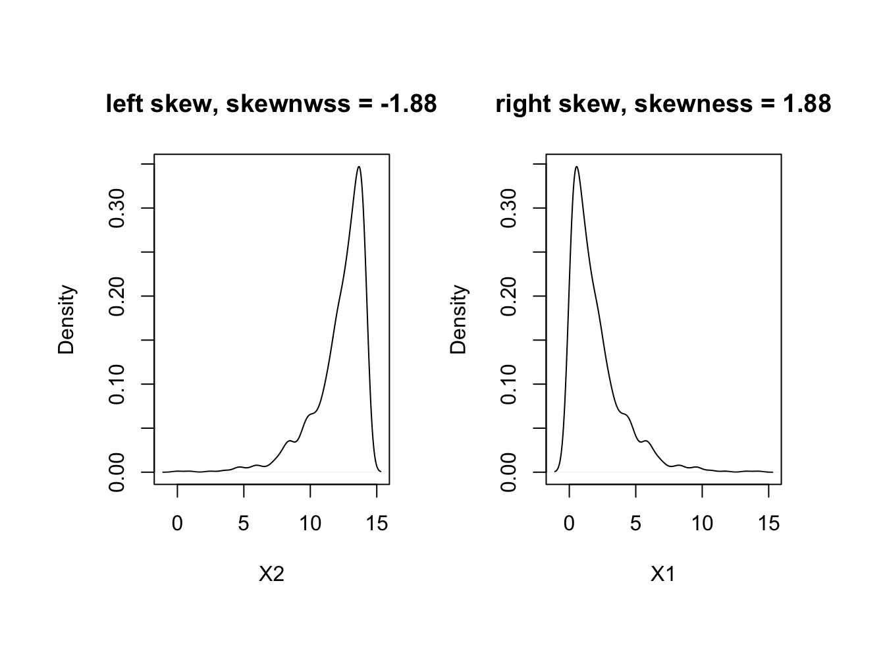
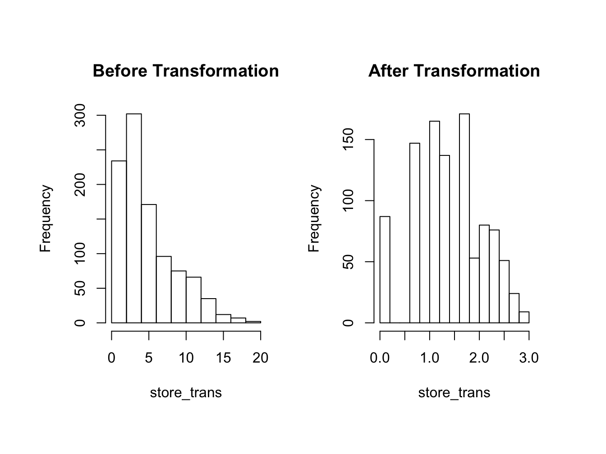
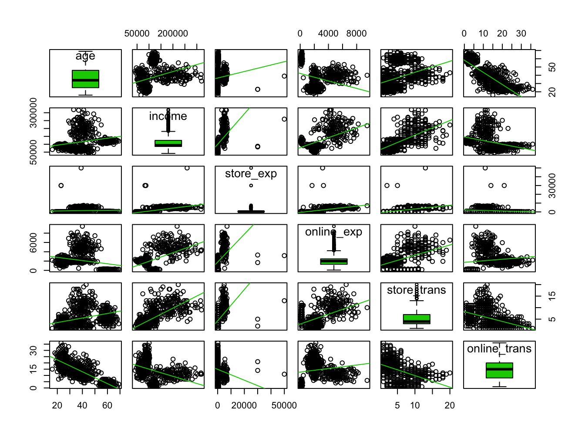
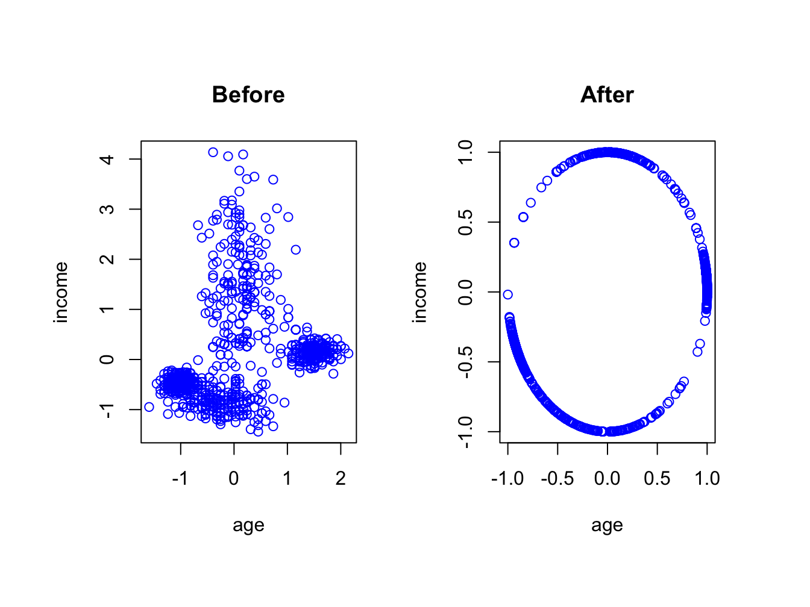
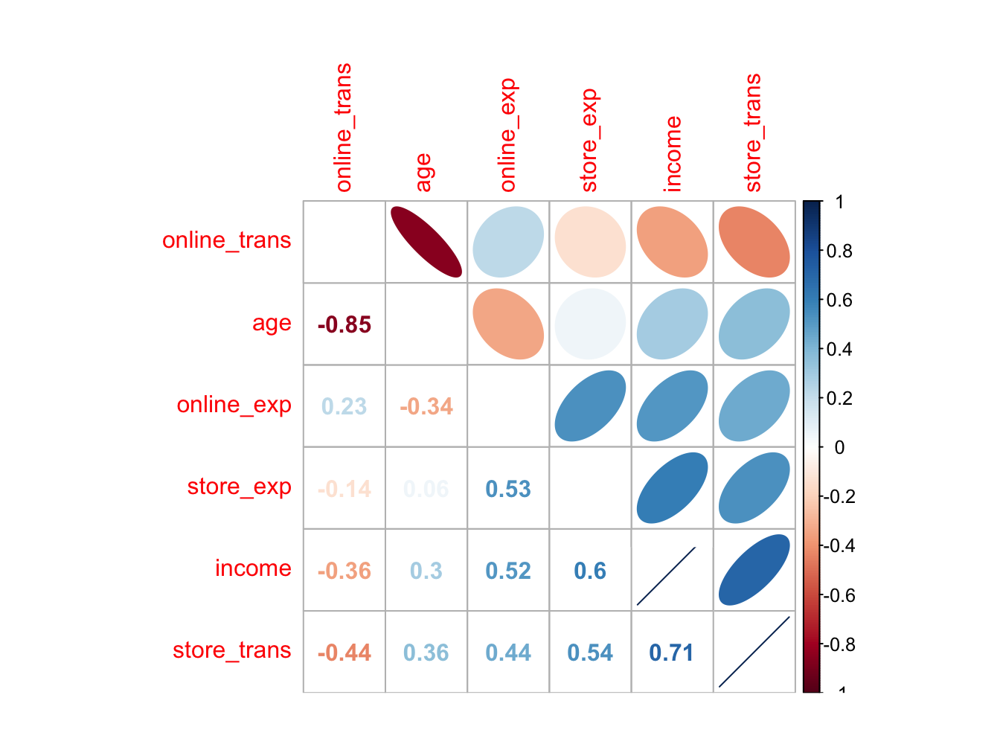

<!DOCTYPE html>
<html >

<head>

  <meta charset="UTF-8">
  <meta http-equiv="X-UA-Compatible" content="IE=edge">
  <title>The Science and Art of Data</title>
  <meta name="description" content="This is the handouts for CE course at JSM 2017">
  <meta name="generator" content="bookdown 0.4 and GitBook 2.6.7">

  <meta property="og:title" content="The Science and Art of Data" />
  <meta property="og:type" content="book" />
  
  
  <meta property="og:description" content="This is the handouts for CE course at JSM 2017" />
  

  <meta name="twitter:card" content="summary" />
  <meta name="twitter:title" content="The Science and Art of Data" />
  
  <meta name="twitter:description" content="This is the handouts for CE course at JSM 2017" />
  

<meta name="author" content="Hui Lin and Ming Li">


<meta name="date" content="2017-07-19">

  <meta name="viewport" content="width=device-width, initial-scale=1">
  <meta name="apple-mobile-web-app-capable" content="yes">
  <meta name="apple-mobile-web-app-status-bar-style" content="black">
  
  
<link rel="prev" href="big-data-cloud-platform.html">
<link rel="next" href="data-wrangling.html">
<script src="libs/jquery-2.2.3/jquery.min.js"></script>
<link href="libs/gitbook-2.6.7/css/style.css" rel="stylesheet" />
<link href="libs/gitbook-2.6.7/css/plugin-bookdown.css" rel="stylesheet" />
<link href="libs/gitbook-2.6.7/css/plugin-highlight.css" rel="stylesheet" />
<link href="libs/gitbook-2.6.7/css/plugin-search.css" rel="stylesheet" />
<link href="libs/gitbook-2.6.7/css/plugin-fontsettings.css" rel="stylesheet" />


<script src="libs/htmlwidgets-0.8/htmlwidgets.js"></script>
<script src="libs/datatables-binding-0.2/datatables.js"></script>
<link href="libs/dt-core-1.10.12/css/jquery.dataTables.min.css" rel="stylesheet" />
<link href="libs/dt-core-1.10.12/css/jquery.dataTables.extra.css" rel="stylesheet" />
<script src="libs/dt-core-1.10.12/js/jquery.dataTables.min.js"></script>
<link href="libs/leaflet-0.7.3/leaflet.css" rel="stylesheet" />
<script src="libs/leaflet-0.7.3/leaflet.js"></script>
<link href="libs/leafletfix-1.0.0/leafletfix.css" rel="stylesheet" />
<script src="libs/leaflet-binding-1.0.1/leaflet.js"></script>
<link href="libs/dygraphs-1.1.1/dygraph.css" rel="stylesheet" />
<script src="libs/dygraphs-1.1.1/dygraph-combined.js"></script>
<script src="libs/moment-2.8.4/moment.js"></script>
<script src="libs/moment-timezone-0.2.5/moment-timezone-with-data.js"></script>
<script src="libs/moment-fquarter-1.0.0/moment-fquarter.min.js"></script>
<script src="libs/dygraphs-binding-1.1.1.4/dygraphs.js"></script>
<script src="libs/proj4js-2.3.15/proj4.js"></script>
<link href="libs/highcharts-5.0.6/css/motion.css" rel="stylesheet" />
<script src="libs/highcharts-5.0.6/highstock.js"></script>
<script src="libs/highcharts-5.0.6/highcharts-3d.js"></script>
<script src="libs/highcharts-5.0.6/highcharts-more.js"></script>
<script src="libs/highcharts-5.0.6/modules/annotations.js"></script>
<script src="libs/highcharts-5.0.6/modules/broken-axis.js"></script>
<script src="libs/highcharts-5.0.6/modules/data.js"></script>
<script src="libs/highcharts-5.0.6/modules/drilldown.js"></script>
<script src="libs/highcharts-5.0.6/modules/exporting.js"></script>
<script src="libs/highcharts-5.0.6/modules/funnel.js"></script>
<script src="libs/highcharts-5.0.6/modules/heatmap.js"></script>
<script src="libs/highcharts-5.0.6/modules/map.js"></script>
<script src="libs/highcharts-5.0.6/modules/no-data-to-display.js"></script>
<script src="libs/highcharts-5.0.6/modules/offline-exporting.js"></script>
<script src="libs/highcharts-5.0.6/modules/solid-gauge.js"></script>
<script src="libs/highcharts-5.0.6/modules/treemap.js"></script>
<script src="libs/highcharts-5.0.6/plugins/annotations.js"></script>
<script src="libs/highcharts-5.0.6/plugins/draggable-legend.js"></script>
<script src="libs/highcharts-5.0.6/plugins/draggable-points.js"></script>
<script src="libs/highcharts-5.0.6/plugins/export-csv.js"></script>
<script src="libs/highcharts-5.0.6/plugins/grouped-categories.js"></script>
<script src="libs/highcharts-5.0.6/plugins/motion.js"></script>
<script src="libs/highcharts-5.0.6/plugins/pattern-fill-v2.js"></script>
<script src="libs/highcharts-5.0.6/plugins/tooltip-delay.js"></script>
<script src="libs/highcharts-5.0.6/custom/reset.js"></script>
<script src="libs/highcharts-5.0.6/custom/symbols-extra.js"></script>
<script src="libs/highcharts-5.0.6/custom/text-symbols.js"></script>
<link href="libs/fontawesome-4.5.0/font-awesome.min.css" rel="stylesheet" />
<link href="libs/htmlwdgtgrid-1/htmlwdgtgrid.css" rel="stylesheet" />
<script src="libs/highchart-binding-0.5.0/highchart.js"></script>
<link href="libs/bokehjs-0.11.1/bokeh.min.css" rel="stylesheet" />
<script src="libs/bokehjs-0.11.1/bokeh.min.js"></script>
<script src="libs/rbokeh-binding-0.4.2/rbokeh.js"></script>
<script src="libs/d3-3.5.12/d3.min.js"></script>
<link href="libs/metrics-graphics-2.7.0/dist/metricsgraphics.css" rel="stylesheet" />
<link href="libs/metrics-graphics-2.7.0/dist/mg_regions.css" rel="stylesheet" />
<script src="libs/metrics-graphics-2.7.0/dist/metricsgraphics.min.js"></script>
<script src="libs/metrics-graphics-2.7.0/dist/mg_regions.js"></script>
<script src="libs/metricsgraphics-binding-0.9.0/metricsgraphics.js"></script>
<script src="libs/forceNetwork-binding-0.2.11/forceNetwork.js"></script>
<script src="libs/threejs-70/three.min.js"></script>
<script src="libs/threejs-70/Detector.js"></script>
<script src="libs/threejs-70/Projector.js"></script>
<script src="libs/threejs-70/CanvasRenderer.js"></script>
<script src="libs/globe-binding-0.2.2/globe.js"></script>


<style type="text/css">
div.sourceCode { overflow-x: auto; }
table.sourceCode, tr.sourceCode, td.lineNumbers, td.sourceCode {
  margin: 0; padding: 0; vertical-align: baseline; border: none; }
table.sourceCode { width: 100%; line-height: 100%; }
td.lineNumbers { text-align: right; padding-right: 4px; padding-left: 4px; color: #aaaaaa; border-right: 1px solid #aaaaaa; }
td.sourceCode { padding-left: 5px; }
code > span.kw { color: #007020; font-weight: bold; } /* Keyword */
code > span.dt { color: #902000; } /* DataType */
code > span.dv { color: #40a070; } /* DecVal */
code > span.bn { color: #40a070; } /* BaseN */
code > span.fl { color: #40a070; } /* Float */
code > span.ch { color: #4070a0; } /* Char */
code > span.st { color: #4070a0; } /* String */
code > span.co { color: #60a0b0; font-style: italic; } /* Comment */
code > span.ot { color: #007020; } /* Other */
code > span.al { color: #ff0000; font-weight: bold; } /* Alert */
code > span.fu { color: #06287e; } /* Function */
code > span.er { color: #ff0000; font-weight: bold; } /* Error */
code > span.wa { color: #60a0b0; font-weight: bold; font-style: italic; } /* Warning */
code > span.cn { color: #880000; } /* Constant */
code > span.sc { color: #4070a0; } /* SpecialChar */
code > span.vs { color: #4070a0; } /* VerbatimString */
code > span.ss { color: #bb6688; } /* SpecialString */
code > span.im { } /* Import */
code > span.va { color: #19177c; } /* Variable */
code > span.cf { color: #007020; font-weight: bold; } /* ControlFlow */
code > span.op { color: #666666; } /* Operator */
code > span.bu { } /* BuiltIn */
code > span.ex { } /* Extension */
code > span.pp { color: #bc7a00; } /* Preprocessor */
code > span.at { color: #7d9029; } /* Attribute */
code > span.do { color: #ba2121; font-style: italic; } /* Documentation */
code > span.an { color: #60a0b0; font-weight: bold; font-style: italic; } /* Annotation */
code > span.cv { color: #60a0b0; font-weight: bold; font-style: italic; } /* CommentVar */
code > span.in { color: #60a0b0; font-weight: bold; font-style: italic; } /* Information */
</style>

<link rel="stylesheet" href="style.css" type="text/css" />
</head>

<body>


  <div class="book without-animation with-summary font-size-2 font-family-1" data-basepath=".">

    <div class="book-summary">
      <nav role="navigation">

<ul class="summary">
<li class="chapter" data-level="" data-path="index.html"><a href="index.html"><i class="fa fa-check"></i>Copyright Statement</a></li>
<li class="chapter" data-level="" data-path="about-the-authors.html"><a href="about-the-authors.html"><i class="fa fa-check"></i>About the Authors</a></li>
<li class="chapter" data-level="" data-path="acknowledgements.html"><a href="acknowledgements.html"><i class="fa fa-check"></i>Acknowledgements</a></li>
<li class="chapter" data-level="1" data-path="the-art-of-data-science.html"><a href="the-art-of-data-science.html"><i class="fa fa-check"></i><b>1</b> The art of data science</a><ul>
<li class="chapter" data-level="1.1" data-path="the-art-of-data-science.html"><a href="the-art-of-data-science.html#what-is-data-science"><i class="fa fa-check"></i><b>1.1</b> What is data science?</a></li>
<li class="chapter" data-level="1.2" data-path="the-art-of-data-science.html"><a href="the-art-of-data-science.html#is-it-science-totally"><i class="fa fa-check"></i><b>1.2</b> Is it science? Totally?</a></li>
<li class="chapter" data-level="1.3" data-path="the-art-of-data-science.html"><a href="the-art-of-data-science.html#what-kind-of-questions-can-data-science-solve"><i class="fa fa-check"></i><b>1.3</b> What kind of questions can data science solve?</a><ul>
<li class="chapter" data-level="1.3.1" data-path="the-art-of-data-science.html"><a href="the-art-of-data-science.html#prerequisites"><i class="fa fa-check"></i><b>1.3.1</b> Prerequisites</a></li>
<li class="chapter" data-level="1.3.2" data-path="the-art-of-data-science.html"><a href="the-art-of-data-science.html#problem-type"><i class="fa fa-check"></i><b>1.3.2</b> Problem type</a></li>
</ul></li>
<li class="chapter" data-level="1.4" data-path="the-art-of-data-science.html"><a href="the-art-of-data-science.html#what-are-the-required-skills-for-data-scientist"><i class="fa fa-check"></i><b>1.4</b> What are the required skills for data scientist?</a></li>
<li class="chapter" data-level="1.5" data-path="the-art-of-data-science.html"><a href="the-art-of-data-science.html#types-of-learning"><i class="fa fa-check"></i><b>1.5</b> Types of Learning</a></li>
<li class="chapter" data-level="1.6" data-path="the-art-of-data-science.html"><a href="the-art-of-data-science.html#types-of-algorithm"><i class="fa fa-check"></i><b>1.6</b> Types of Algorithm</a></li>
</ul></li>
<li class="chapter" data-level="2" data-path="soft-skills-for-data-scientists.html"><a href="soft-skills-for-data-scientists.html"><i class="fa fa-check"></i><b>2</b> Soft Skills for Data Scientists</a><ul>
<li class="chapter" data-level="2.1" data-path="soft-skills-for-data-scientists.html"><a href="soft-skills-for-data-scientists.html#comparison-between-statistician-and-data-scientist"><i class="fa fa-check"></i><b>2.1</b> Comparison between Statistician and Data Scientist</a></li>
<li class="chapter" data-level="2.2" data-path="soft-skills-for-data-scientists.html"><a href="soft-skills-for-data-scientists.html#where-data-science-team-fits"><i class="fa fa-check"></i><b>2.2</b> Where Data Science Team Fits?</a></li>
<li class="chapter" data-level="2.3" data-path="soft-skills-for-data-scientists.html"><a href="soft-skills-for-data-scientists.html#beyond-data-and-analytics"><i class="fa fa-check"></i><b>2.3</b> Beyond Data and Analytics</a></li>
<li class="chapter" data-level="2.4" data-path="soft-skills-for-data-scientists.html"><a href="soft-skills-for-data-scientists.html#data-scientist-as-a-leader"><i class="fa fa-check"></i><b>2.4</b> Data Scientist as a Leader</a></li>
<li class="chapter" data-level="2.5" data-path="soft-skills-for-data-scientists.html"><a href="soft-skills-for-data-scientists.html#three-pillars-of-knowledge"><i class="fa fa-check"></i><b>2.5</b> Three Pillars of Knowledge</a></li>
<li class="chapter" data-level="2.6" data-path="soft-skills-for-data-scientists.html"><a href="soft-skills-for-data-scientists.html#common-pitfalls-of-data-science-projects"><i class="fa fa-check"></i><b>2.6</b> Common Pitfalls of Data Science Projects</a></li>
</ul></li>
<li class="chapter" data-level="3" data-path="introduction-to-the-data.html"><a href="introduction-to-the-data.html"><i class="fa fa-check"></i><b>3</b> Introduction to the data</a><ul>
<li class="chapter" data-level="3.1" data-path="introduction-to-the-data.html"><a href="introduction-to-the-data.html#customer-data-for-clothing-company"><i class="fa fa-check"></i><b>3.1</b> Customer Data for Clothing Company</a></li>
<li class="chapter" data-level="3.2" data-path="introduction-to-the-data.html"><a href="introduction-to-the-data.html#customer-satisfaction-survey-data-from-airline-company"><i class="fa fa-check"></i><b>3.2</b> Customer Satisfaction Survey Data from Airline Company</a></li>
<li class="chapter" data-level="3.3" data-path="introduction-to-the-data.html"><a href="introduction-to-the-data.html#swine-disease-breakout-data"><i class="fa fa-check"></i><b>3.3</b> Swine Disease Breakout Data</a></li>
</ul></li>
<li class="chapter" data-level="4" data-path="big-data-cloud-platform.html"><a href="big-data-cloud-platform.html"><i class="fa fa-check"></i><b>4</b> Big Data Cloud Platform</a><ul>
<li class="chapter" data-level="4.1" data-path="big-data-cloud-platform.html"><a href="big-data-cloud-platform.html#how-data-becomes-science"><i class="fa fa-check"></i><b>4.1</b> How Data becomes Science?</a></li>
<li class="chapter" data-level="4.2" data-path="big-data-cloud-platform.html"><a href="big-data-cloud-platform.html#power-of-cluster-of-computers"><i class="fa fa-check"></i><b>4.2</b> Power of Cluster of Computers</a></li>
<li class="chapter" data-level="4.3" data-path="big-data-cloud-platform.html"><a href="big-data-cloud-platform.html#evolution-of-clustering-computing"><i class="fa fa-check"></i><b>4.3</b> Evolution of Clustering Computing</a><ul>
<li class="chapter" data-level="4.3.1" data-path="big-data-cloud-platform.html"><a href="big-data-cloud-platform.html#hadoop"><i class="fa fa-check"></i><b>4.3.1</b> Hadoop</a></li>
<li class="chapter" data-level="4.3.2" data-path="big-data-cloud-platform.html"><a href="big-data-cloud-platform.html#spark"><i class="fa fa-check"></i><b>4.3.2</b> Spark</a></li>
</ul></li>
<li class="chapter" data-level="4.4" data-path="big-data-cloud-platform.html"><a href="big-data-cloud-platform.html#introduction-of-cloud-environment"><i class="fa fa-check"></i><b>4.4</b> Introduction of Cloud Environment</a></li>
<li class="chapter" data-level="4.5" data-path="big-data-cloud-platform.html"><a href="big-data-cloud-platform.html#open-account-and-create-a-cluster"><i class="fa fa-check"></i><b>4.5</b> Open Account and Create a Cluster</a></li>
<li class="chapter" data-level="4.6" data-path="big-data-cloud-platform.html"><a href="big-data-cloud-platform.html#r-notebook"><i class="fa fa-check"></i><b>4.6</b> R Notebook</a></li>
<li class="chapter" data-level="4.7" data-path="big-data-cloud-platform.html"><a href="big-data-cloud-platform.html#markdown-cells"><i class="fa fa-check"></i><b>4.7</b> Markdown Cells</a></li>
<li class="chapter" data-level="4.8" data-path="big-data-cloud-platform.html"><a href="big-data-cloud-platform.html#leverage-hadoop-and-spark-parallel-using-r-notebook"><i class="fa fa-check"></i><b>4.8</b> Leverage Hadoop and Spark Parallel using R Notebook</a><ul>
<li class="chapter" data-level="4.8.1" data-path="big-data-cloud-platform.html"><a href="big-data-cloud-platform.html#library-installation"><i class="fa fa-check"></i><b>4.8.1</b> Library Installation</a></li>
<li class="chapter" data-level="4.8.2" data-path="big-data-cloud-platform.html"><a href="big-data-cloud-platform.html#create-connection"><i class="fa fa-check"></i><b>4.8.2</b> Create Connection</a></li>
<li class="chapter" data-level="4.8.3" data-path="big-data-cloud-platform.html"><a href="big-data-cloud-platform.html#sample-dataset"><i class="fa fa-check"></i><b>4.8.3</b> Sample Dataset</a></li>
<li class="chapter" data-level="4.8.4" data-path="big-data-cloud-platform.html"><a href="big-data-cloud-platform.html#important---copy-data-to-spark-environment"><i class="fa fa-check"></i><b>4.8.4</b> IMPORTANT - Copy Data to Spark Environment</a></li>
<li class="chapter" data-level="4.8.5" data-path="big-data-cloud-platform.html"><a href="big-data-cloud-platform.html#analyzing-the-data"><i class="fa fa-check"></i><b>4.8.5</b> Analyzing the Data</a></li>
<li class="chapter" data-level="4.8.6" data-path="big-data-cloud-platform.html"><a href="big-data-cloud-platform.html#collect-results-back-to-master-node"><i class="fa fa-check"></i><b>4.8.6</b> Collect Results Back to Master Node</a></li>
<li class="chapter" data-level="4.8.7" data-path="big-data-cloud-platform.html"><a href="big-data-cloud-platform.html#fit-regression-to-sparkdataframe"><i class="fa fa-check"></i><b>4.8.7</b> Fit Regression to SparkDataFrame</a></li>
<li class="chapter" data-level="4.8.8" data-path="big-data-cloud-platform.html"><a href="big-data-cloud-platform.html#fit-a-k-means-cluster"><i class="fa fa-check"></i><b>4.8.8</b> Fit a K-means Cluster</a></li>
<li class="chapter" data-level="4.8.9" data-path="big-data-cloud-platform.html"><a href="big-data-cloud-platform.html#summary"><i class="fa fa-check"></i><b>4.8.9</b> Summary</a></li>
</ul></li>
<li class="chapter" data-level="4.9" data-path="big-data-cloud-platform.html"><a href="big-data-cloud-platform.html#databases-and-sql"><i class="fa fa-check"></i><b>4.9</b> Databases and SQL</a><ul>
<li class="chapter" data-level="4.9.1" data-path="big-data-cloud-platform.html"><a href="big-data-cloud-platform.html#database-table-and-view"><i class="fa fa-check"></i><b>4.9.1</b> Database, Table and View</a></li>
<li class="chapter" data-level="4.9.2" data-path="big-data-cloud-platform.html"><a href="big-data-cloud-platform.html#sample-tables"><i class="fa fa-check"></i><b>4.9.2</b> Sample Tables</a></li>
<li class="chapter" data-level="4.9.3" data-path="big-data-cloud-platform.html"><a href="big-data-cloud-platform.html#basic-sql-statement"><i class="fa fa-check"></i><b>4.9.3</b> Basic SQL Statement</a></li>
<li class="chapter" data-level="4.9.4" data-path="big-data-cloud-platform.html"><a href="big-data-cloud-platform.html#simple-select-statement"><i class="fa fa-check"></i><b>4.9.4</b> Simple SELECT Statement</a></li>
<li class="chapter" data-level="4.9.5" data-path="big-data-cloud-platform.html"><a href="big-data-cloud-platform.html#aggregation-functions-and-group-by"><i class="fa fa-check"></i><b>4.9.5</b> Aggregation Functions and GROUP BY</a></li>
<li class="chapter" data-level="4.9.6" data-path="big-data-cloud-platform.html"><a href="big-data-cloud-platform.html#join-multiple-tables"><i class="fa fa-check"></i><b>4.9.6</b> Join Multiple Tables</a></li>
<li class="chapter" data-level="4.9.7" data-path="big-data-cloud-platform.html"><a href="big-data-cloud-platform.html#add-more-content-into-a-table"><i class="fa fa-check"></i><b>4.9.7</b> Add More Content into a Table</a></li>
<li class="chapter" data-level="4.9.8" data-path="big-data-cloud-platform.html"><a href="big-data-cloud-platform.html#advanced-topics-in-database"><i class="fa fa-check"></i><b>4.9.8</b> Advanced Topics in Database</a></li>
</ul></li>
<li class="chapter" data-level="4.10" data-path="big-data-cloud-platform.html"><a href="big-data-cloud-platform.html#other-useful-topics"><i class="fa fa-check"></i><b>4.10</b> Other Useful Topics</a><ul>
<li class="chapter" data-level="4.10.1" data-path="big-data-cloud-platform.html"><a href="big-data-cloud-platform.html#linux-operation-system"><i class="fa fa-check"></i><b>4.10.1</b> Linux Operation System</a></li>
<li class="chapter" data-level="4.10.2" data-path="big-data-cloud-platform.html"><a href="big-data-cloud-platform.html#visualization"><i class="fa fa-check"></i><b>4.10.2</b> Visualization</a></li>
<li class="chapter" data-level="4.10.3" data-path="big-data-cloud-platform.html"><a href="big-data-cloud-platform.html#gpu"><i class="fa fa-check"></i><b>4.10.3</b> GPU</a></li>
</ul></li>
</ul></li>
<li class="chapter" data-level="5" data-path="data-pre-processing.html"><a href="data-pre-processing.html"><i class="fa fa-check"></i><b>5</b> Data Pre-processing</a><ul>
<li class="chapter" data-level="5.1" data-path="data-pre-processing.html"><a href="data-pre-processing.html#data-cleaning"><i class="fa fa-check"></i><b>5.1</b> Data Cleaning</a></li>
<li class="chapter" data-level="5.2" data-path="data-pre-processing.html"><a href="data-pre-processing.html#missing-values"><i class="fa fa-check"></i><b>5.2</b> Missing Values</a><ul>
<li class="chapter" data-level="5.2.1" data-path="data-pre-processing.html"><a href="data-pre-processing.html#impute-missing-values-with-medianmode"><i class="fa fa-check"></i><b>5.2.1</b> Impute missing values with median/mode</a></li>
<li class="chapter" data-level="5.2.2" data-path="data-pre-processing.html"><a href="data-pre-processing.html#k-nearest-neighbors"><i class="fa fa-check"></i><b>5.2.2</b> K-nearest neighbors</a></li>
<li class="chapter" data-level="5.2.3" data-path="data-pre-processing.html"><a href="data-pre-processing.html#bagging-tree"><i class="fa fa-check"></i><b>5.2.3</b> Bagging Tree</a></li>
</ul></li>
<li class="chapter" data-level="5.3" data-path="data-pre-processing.html"><a href="data-pre-processing.html#centering-and-scaling"><i class="fa fa-check"></i><b>5.3</b> Centering and Scaling</a></li>
<li class="chapter" data-level="5.4" data-path="data-pre-processing.html"><a href="data-pre-processing.html#resolve-skewness"><i class="fa fa-check"></i><b>5.4</b> Resolve Skewness</a></li>
<li class="chapter" data-level="5.5" data-path="data-pre-processing.html"><a href="data-pre-processing.html#resolve-outliers"><i class="fa fa-check"></i><b>5.5</b> Resolve Outliers</a></li>
<li class="chapter" data-level="5.6" data-path="data-pre-processing.html"><a href="data-pre-processing.html#collinearity"><i class="fa fa-check"></i><b>5.6</b> Collinearity</a></li>
<li class="chapter" data-level="5.7" data-path="data-pre-processing.html"><a href="data-pre-processing.html#sparse-variables"><i class="fa fa-check"></i><b>5.7</b> Sparse Variables</a></li>
<li class="chapter" data-level="5.8" data-path="data-pre-processing.html"><a href="data-pre-processing.html#re-encode-dummy-variables"><i class="fa fa-check"></i><b>5.8</b> Re-encode Dummy Variables</a></li>
</ul></li>
<li class="chapter" data-level="6" data-path="data-wrangling.html"><a href="data-wrangling.html"><i class="fa fa-check"></i><b>6</b> Data Wrangling</a><ul>
<li class="chapter" data-level="6.1" data-path="data-wrangling.html"><a href="data-wrangling.html#read-and-write-data"><i class="fa fa-check"></i><b>6.1</b> Read and write data</a><ul>
<li class="chapter" data-level="6.1.1" data-path="data-wrangling.html"><a href="data-wrangling.html#readr"><i class="fa fa-check"></i><b>6.1.1</b> <code>readr</code></a></li>
<li class="chapter" data-level="6.1.2" data-path="data-wrangling.html"><a href="data-wrangling.html#data.table-enhanced-data.frame"><i class="fa fa-check"></i><b>6.1.2</b> <code>data.table</code>— enhanced <code>data.frame</code></a></li>
</ul></li>
<li class="chapter" data-level="6.2" data-path="data-wrangling.html"><a href="data-wrangling.html#summarize-data"><i class="fa fa-check"></i><b>6.2</b> Summarize data</a><ul>
<li class="chapter" data-level="6.2.1" data-path="data-wrangling.html"><a href="data-wrangling.html#apply-lapply-and-sapply-in-base-r"><i class="fa fa-check"></i><b>6.2.1</b> <code>apply()</code>, <code>lapply()</code> and <code>sapply()</code> in base R</a></li>
<li class="chapter" data-level="6.2.2" data-path="data-wrangling.html"><a href="data-wrangling.html#ddply-in-plyr-package"><i class="fa fa-check"></i><b>6.2.2</b> <code>ddply()</code> in <code>plyr</code> package</a></li>
<li class="chapter" data-level="6.2.3" data-path="data-wrangling.html"><a href="data-wrangling.html#dplyr-package"><i class="fa fa-check"></i><b>6.2.3</b> <code>dplyr</code> package</a></li>
</ul></li>
<li class="chapter" data-level="6.3" data-path="data-wrangling.html"><a href="data-wrangling.html#tidy-and-reshape-data"><i class="fa fa-check"></i><b>6.3</b> Tidy and Reshape Data</a><ul>
<li class="chapter" data-level="6.3.1" data-path="data-wrangling.html"><a href="data-wrangling.html#reshape2-package"><i class="fa fa-check"></i><b>6.3.1</b> <code>reshape2</code> package</a></li>
<li class="chapter" data-level="6.3.2" data-path="data-wrangling.html"><a href="data-wrangling.html#tidyr-package"><i class="fa fa-check"></i><b>6.3.2</b> <code>tidyr</code> package</a></li>
</ul></li>
</ul></li>
<li class="chapter" data-level="7" data-path="model-tuning-technique.html"><a href="model-tuning-technique.html"><i class="fa fa-check"></i><b>7</b> Model Tuning Technique</a><ul>
<li class="chapter" data-level="7.1" data-path="model-tuning-technique.html"><a href="model-tuning-technique.html#systematic-error-and-random-error"><i class="fa fa-check"></i><b>7.1</b> Systematic Error and Random Error</a><ul>
<li class="chapter" data-level="7.1.1" data-path="model-tuning-technique.html"><a href="model-tuning-technique.html#measurement-error-in-the-response"><i class="fa fa-check"></i><b>7.1.1</b> Measurement Error in the Response</a></li>
<li class="chapter" data-level="7.1.2" data-path="model-tuning-technique.html"><a href="model-tuning-technique.html#measurement-error-in-the-independent-variables"><i class="fa fa-check"></i><b>7.1.2</b> Measurement Error in the Independent Variables</a></li>
</ul></li>
<li class="chapter" data-level="7.2" data-path="model-tuning-technique.html"><a href="model-tuning-technique.html#data-splitting-and-resampling"><i class="fa fa-check"></i><b>7.2</b> Data Splitting and Resampling</a></li>
</ul></li>
<li class="chapter" data-level="8" data-path="neural-network.html"><a href="neural-network.html"><i class="fa fa-check"></i><b>8</b> Neural Network</a><ul>
<li class="chapter" data-level="8.1" data-path="neural-network.html"><a href="neural-network.html#projection-pursuit-regression"><i class="fa fa-check"></i><b>8.1</b> Projection Pursuit Regression</a></li>
<li class="chapter" data-level="8.2" data-path="neural-network.html"><a href="neural-network.html#neural-networks"><i class="fa fa-check"></i><b>8.2</b> Neural Networks</a></li>
<li class="chapter" data-level="8.3" data-path="neural-network.html"><a href="neural-network.html#fitting-neural-network"><i class="fa fa-check"></i><b>8.3</b> Fitting Neural Network</a></li>
<li class="chapter" data-level="8.4" data-path="neural-network.html"><a href="neural-network.html#model-training"><i class="fa fa-check"></i><b>8.4</b> Model Training</a></li>
<li class="chapter" data-level="8.5" data-path="neural-network.html"><a href="neural-network.html#computation-in-r"><i class="fa fa-check"></i><b>8.5</b> Computation in R</a><ul>
<li class="chapter" data-level="8.5.1" data-path="neural-network.html"><a href="neural-network.html#general-neural-network"><i class="fa fa-check"></i><b>8.5.1</b> General Neural Network</a></li>
<li class="chapter" data-level="8.5.2" data-path="neural-network.html"><a href="neural-network.html#averaged-neural-network"><i class="fa fa-check"></i><b>8.5.2</b> Averaged Neural Network</a></li>
<li class="chapter" data-level="8.5.3" data-path="neural-network.html"><a href="neural-network.html#model-comparison"><i class="fa fa-check"></i><b>8.5.3</b> Model Comparison</a></li>
</ul></li>
</ul></li>
<li class="chapter" data-level="9" data-path="dynamicreproducible-report.html"><a href="dynamicreproducible-report.html"><i class="fa fa-check"></i><b>9</b> Dynamic/Reproducible Report</a><ul>
<li class="chapter" data-level="9.1" data-path="dynamicreproducible-report.html"><a href="dynamicreproducible-report.html#what-is-r-markdown"><i class="fa fa-check"></i><b>9.1</b> What is R Markdown?</a></li>
<li class="chapter" data-level="9.2" data-path="dynamicreproducible-report.html"><a href="dynamicreproducible-report.html#how-to-start"><i class="fa fa-check"></i><b>9.2</b> How to Start?</a><ul>
<li class="chapter" data-level="9.2.1" data-path="dynamicreproducible-report.html"><a href="dynamicreproducible-report.html#how-it-works"><i class="fa fa-check"></i><b>9.2.1</b> How It Works?</a></li>
<li class="chapter" data-level="9.2.2" data-path="dynamicreproducible-report.html"><a href="dynamicreproducible-report.html#get-started"><i class="fa fa-check"></i><b>9.2.2</b> Get Started</a></li>
<li class="chapter" data-level="9.2.3" data-path="dynamicreproducible-report.html"><a href="dynamicreproducible-report.html#markdown-basic"><i class="fa fa-check"></i><b>9.2.3</b> Markdown Basic</a></li>
</ul></li>
<li class="chapter" data-level="9.3" data-path="dynamicreproducible-report.html"><a href="dynamicreproducible-report.html#html"><i class="fa fa-check"></i><b>9.3</b> HTML</a><ul>
<li class="chapter" data-level="9.3.1" data-path="dynamicreproducible-report.html"><a href="dynamicreproducible-report.html#create-an-html-document"><i class="fa fa-check"></i><b>9.3.1</b> Create an HTML document</a></li>
<li class="chapter" data-level="9.3.2" data-path="dynamicreproducible-report.html"><a href="dynamicreproducible-report.html#floating-toc"><i class="fa fa-check"></i><b>9.3.2</b> Floating TOC</a></li>
<li class="chapter" data-level="9.3.3" data-path="dynamicreproducible-report.html"><a href="dynamicreproducible-report.html#code-chunks"><i class="fa fa-check"></i><b>9.3.3</b> Code Chunks</a></li>
</ul></li>
<li class="chapter" data-level="9.4" data-path="dynamicreproducible-report.html"><a href="dynamicreproducible-report.html#html5-slides"><i class="fa fa-check"></i><b>9.4</b> HTML5 Slides</a><ul>
<li class="chapter" data-level="9.4.1" data-path="dynamicreproducible-report.html"><a href="dynamicreproducible-report.html#ioslides-presentation"><i class="fa fa-check"></i><b>9.4.1</b> <code>ioslides</code> presentation</a></li>
<li class="chapter" data-level="9.4.2" data-path="dynamicreproducible-report.html"><a href="dynamicreproducible-report.html#slidy-presentation"><i class="fa fa-check"></i><b>9.4.2</b> <code>slidy</code> presentation</a></li>
</ul></li>
<li class="chapter" data-level="9.5" data-path="dynamicreproducible-report.html"><a href="dynamicreproducible-report.html#dashboards"><i class="fa fa-check"></i><b>9.5</b> Dashboards</a><ul>
<li class="chapter" data-level="9.5.1" data-path="dynamicreproducible-report.html"><a href="dynamicreproducible-report.html#layouts"><i class="fa fa-check"></i><b>9.5.1</b> Layouts</a></li>
<li class="chapter" data-level="9.5.2" data-path="dynamicreproducible-report.html"><a href="dynamicreproducible-report.html#components"><i class="fa fa-check"></i><b>9.5.2</b> Components</a></li>
</ul></li>
<li class="chapter" data-level="9.6" data-path="dynamicreproducible-report.html"><a href="dynamicreproducible-report.html#shiny-dashboard"><i class="fa fa-check"></i><b>9.6</b> Shiny Dashboard</a><ul>
<li class="chapter" data-level="9.6.1" data-path="dynamicreproducible-report.html"><a href="dynamicreproducible-report.html#brief-introduction-to-shiny"><i class="fa fa-check"></i><b>9.6.1</b> Brief Introduction to Shiny</a></li>
<li class="chapter" data-level="9.6.2" data-path="dynamicreproducible-report.html"><a href="dynamicreproducible-report.html#using-shiny-with-flexdashboard"><i class="fa fa-check"></i><b>9.6.2</b> Using <code>shiny</code> with <code>flexdashboard</code></a></li>
</ul></li>
<li class="chapter" data-level="9.7" data-path="dynamicreproducible-report.html"><a href="dynamicreproducible-report.html#html-widgets-1"><i class="fa fa-check"></i><b>9.7</b> HTML Widgets</a><ul>
<li class="chapter" data-level="9.7.1" data-path="dynamicreproducible-report.html"><a href="dynamicreproducible-report.html#dt-a-wrapper-of-the-javascript-library-datatables"><i class="fa fa-check"></i><b>9.7.1</b> <code>DT</code>: A Wrapper of the JavaScript Library DataTables</a></li>
<li class="chapter" data-level="9.7.2" data-path="dynamicreproducible-report.html"><a href="dynamicreproducible-report.html#leafletinteractive-web-maps-based-on-the-leaflet-javascript-library"><i class="fa fa-check"></i><b>9.7.2</b> <code>leaflet</code>:Interactive Web-Maps Based on the Leaflet JavaScript Library</a></li>
<li class="chapter" data-level="9.7.3" data-path="dynamicreproducible-report.html"><a href="dynamicreproducible-report.html#dygraphs-interactive-plot-for-time-series-data"><i class="fa fa-check"></i><b>9.7.3</b> <code>dygraphs</code>: interactive plot for time series data</a></li>
<li class="chapter" data-level="9.7.4" data-path="dynamicreproducible-report.html"><a href="dynamicreproducible-report.html#highcharter"><i class="fa fa-check"></i><b>9.7.4</b> <code>highcharter</code></a></li>
<li class="chapter" data-level="9.7.5" data-path="dynamicreproducible-report.html"><a href="dynamicreproducible-report.html#rbokeh-is-a-visualization-library-that-provides-a-flexible-and-powerful-declarative-framework-for-creating-web-based-plots"><i class="fa fa-check"></i><b>9.7.5</b> <code>rbokeh</code> is a visualization library that provides a flexible and powerful declarative framework for creating web-based plots</a></li>
<li class="chapter" data-level="9.7.6" data-path="dynamicreproducible-report.html"><a href="dynamicreproducible-report.html#metricsgraphics-enables-easy-creation-of-d3-scatterplots-line-charts-and-histograms."><i class="fa fa-check"></i><b>9.7.6</b> <code>metricsgraphics</code> enables easy creation of D3 scatterplots, line charts, and histograms.</a></li>
<li class="chapter" data-level="9.7.7" data-path="dynamicreproducible-report.html"><a href="dynamicreproducible-report.html#networkd3-d3-javascript-network-graphs-from-r"><i class="fa fa-check"></i><b>9.7.7</b> <code>networkD3</code>: D3 JavaScript Network Graphs from R</a></li>
<li class="chapter" data-level="9.7.8" data-path="dynamicreproducible-report.html"><a href="dynamicreproducible-report.html#threejs-interactive-3d-scatter-plots-and-globes"><i class="fa fa-check"></i><b>9.7.8</b> <code>threejs</code>: Interactive 3D Scatter Plots and Globes</a></li>
</ul></li>
</ul></li>
<li class="chapter" data-level="10" data-path="references.html"><a href="references.html"><i class="fa fa-check"></i><b>10</b> References</a></li>
</ul>

      </nav>
    </div>

    <div class="book-body">
      <div class="body-inner">
        <div class="book-header" role="navigation">
          <h1>
            <i class="fa fa-circle-o-notch fa-spin"></i><a href="./">The Science and Art of Data</a>
          </h1>
        </div>

        <div class="page-wrapper" tabindex="-1" role="main">
          <div class="page-inner">

            <section class="normal" id="section-">
<div id="data-pre-processing" class="section level1">
<h1><span class="header-section-number">Chapter 5</span> Data Pre-processing</h1>
<p>Many data analysis related books focus on models, algorithms and statistical inferences. However, in practice, raw data is usually not directly used for modeling. Data preprocessing is the process of converting raw data into clean data that is proper for modeling. A model fails for various reasons. One is that the modeler doesn’t correctly preprocess data before modeling. Data preprocessing can significantly impact model results, such as imputing missing value and handling with outliers. So data preprocessing is a very critical part.</p>
<p></p>
<p>In real life, depending on the stage of data cleanup, data has the following types:</p>
<ol style="list-style-type: decimal">
<li>Raw data</li>
<li>Technically correct data</li>
<li>Data that is proper for the model</li>
<li>Summarized data</li>
<li>Data with fixed format</li>
</ol>
<p>The raw data is the first-hand data that analyst pull from the database, market survey responds from your clients, the experimental results collected by the R &amp; D department, and so on. These data may be very rough, and R sometimes can’t read them directly. The table title could be multi-line, or the format does not meet the requirements:</p>
<ul>
<li>Use 50% to represent the percentage rather than 0.5, so R will read it as a character;</li>
<li>The missing value of the sales is represented by “-” instead of space so that R will treat the variable as character or factor type;</li>
<li>The data is in a slideshow document, or the spreadsheet is not “.csv” but “.xlsx”</li>
<li>…</li>
</ul>
<p>Most of the time, you need to clean the data so that R can import them. Some data format requires a specific package. Technically correct data is the data, after preliminary cleaning or format conversion, that R (or another tool you use) can successfully import it.</p>
<p>Assume we have loaded the data into R with reasonable column names, variable format and so on. That does not mean the data is entirely correct. There may be some observations that do not make sense, such as age is negative, the discount percentage is greater than 1, or data is missing. Depending on the situation, there may be a variety of problems with the data. It is necessary to clean the data before modeling. Moreover, different models have different requirements on the data. For example, some model may require the variables are of consistent scale; some may be susceptible to outliers or collinearity, some may not be able to handle categorical variables and so on. The modeler has to preprocess the data to make it proper for the specific model.</p>
<p>Sometimes we need to aggregate the data. For example, add up the daily sales to get annual sales of a product at different locations. In customer segmentation, it is common practice to build a profile for each segment. It requires calculating some statistics such as average age, average income, age standard deviation, etc. Data aggregation is also necessary for presentation, or for data visualization.</p>
<p>The final table results for clients need to be in a nicer format than what used in the analysis. Usually, data analysts will take the results from data scientists and adjust the format, such as labels, cell color, highlight. It is important for a data scientist to make sure the results look consistent which makes the next step easier for data analysts.</p>
<p>It is highly recommended to store each step of the data and the R code, making the whole process as repeatable as possible. The R markdown reproducible report will be extremely helpful for that. If the data changes, it is easy to rerun the process. In the remainder of this chapter, we will show the most common data preprocessing methods.</p>
<p>Load the R packages first:</p>
<div class="sourceCode"><pre class="sourceCode r"><code class="sourceCode r"><span class="kw">source</span>(<span class="st">&quot;https://raw.githubusercontent.com/happyrabbit/CE_JSM2017/master/Rcode/00-course-setup.R&quot;</span>)</code></pre></div>
<div id="data-cleaning" class="section level2">
<h2><span class="header-section-number">5.1</span> Data Cleaning</h2>
<p>After you load the data, the first thing is to check how many variables are there, the type of variables, the distributions, and data errors. Let’s read and check the data:</p>
<div class="sourceCode"><pre class="sourceCode r"><code class="sourceCode r">sim.dat &lt;-<span class="st"> </span><span class="kw">read.csv</span>(<span class="st">&quot;https://raw.githubusercontent.com/happyrabbit/DataScientistR/master/Data/SegData.csv &quot;</span>)
<span class="kw">summary</span>(sim.dat)</code></pre></div>
<pre><code>##       age            gender        income      
##  Min.   : 16.00   Female:554   Min.   : 41776  
##  1st Qu.: 25.00   Male  :446   1st Qu.: 85832  
##  Median : 36.00                Median : 93869  
##  Mean   : 38.84                Mean   :113543  
##  3rd Qu.: 53.00                3rd Qu.:124572  
##  Max.   :300.00                Max.   :319704  
##                                NA&#39;s   :184     
##  house       store_exp         online_exp     
##  No :432   Min.   : -500.0   Min.   :  68.82  
##  Yes:568   1st Qu.:  205.0   1st Qu.: 420.34  
##            Median :  329.0   Median :1941.86  
##            Mean   : 1356.8   Mean   :2120.18  
##            3rd Qu.:  597.3   3rd Qu.:2440.78  
##            Max.   :50000.0   Max.   :9479.44  
##                                               
##   store_trans     online_trans         Q1       
##  Min.   : 1.00   Min.   : 1.00   Min.   :1.000  
##  1st Qu.: 3.00   1st Qu.: 6.00   1st Qu.:2.000  
##  Median : 4.00   Median :14.00   Median :3.000  
##  Mean   : 5.35   Mean   :13.55   Mean   :3.101  
##  3rd Qu.: 7.00   3rd Qu.:20.00   3rd Qu.:4.000  
##  Max.   :20.00   Max.   :36.00   Max.   :5.000  
##                                                 
##        Q2              Q3              Q4       
##  Min.   :1.000   Min.   :1.000   Min.   :1.000  
##  1st Qu.:1.000   1st Qu.:1.000   1st Qu.:2.000  
##  Median :1.000   Median :1.000   Median :3.000  
##  Mean   :1.823   Mean   :1.992   Mean   :2.763  
##  3rd Qu.:2.000   3rd Qu.:3.000   3rd Qu.:4.000  
##  Max.   :5.000   Max.   :5.000   Max.   :5.000  
##                                                 
##        Q5              Q6              Q7       
##  Min.   :1.000   Min.   :1.000   Min.   :1.000  
##  1st Qu.:1.750   1st Qu.:1.000   1st Qu.:2.500  
##  Median :4.000   Median :2.000   Median :4.000  
##  Mean   :2.945   Mean   :2.448   Mean   :3.434  
##  3rd Qu.:4.000   3rd Qu.:4.000   3rd Qu.:4.000  
##  Max.   :5.000   Max.   :5.000   Max.   :5.000  
##                                                 
##        Q8              Q9             Q10      
##  Min.   :1.000   Min.   :1.000   Min.   :1.00  
##  1st Qu.:1.000   1st Qu.:2.000   1st Qu.:1.00  
##  Median :2.000   Median :4.000   Median :2.00  
##  Mean   :2.396   Mean   :3.085   Mean   :2.32  
##  3rd Qu.:3.000   3rd Qu.:4.000   3rd Qu.:3.00  
##  Max.   :5.000   Max.   :5.000   Max.   :5.00  
##                                                
##         segment   
##  Conspicuous:200  
##  Price      :250  
##  Quality    :200  
##  Style      :350  
##                   
##                   
## </code></pre>
<p>Are there any problems? Questionnaire response Q1-Q10 seem reasonable, the minimum is 1 and maximum is 5. Recall that the questionnaire score is 1-5. The number of store transactions (store_trans) and online transactions (store_trans) make sense too. Things need to pay attention are:</p>
<ul>
<li>There are some missing values.</li>
<li>There are outliers for store expenses (<code>store_exp</code>). The maximum value is 50000. Who would spend $50000 a year buying clothes? Is it an imputation error?</li>
<li>There is a negative value ( -500) in <code>store_exp</code> which is not logical.</li>
<li>Someone is 300 years old.</li>
</ul>
<p>How to deal with that? Depending on the real situation, if the sample size is large enough, it will not hurt to delete those problematic samples. Here we have 1000 observations. Since marketing survey is usually expensive, it is better to set these values as missing and impute them instead of deleting the rows.</p>
<div class="sourceCode"><pre class="sourceCode r"><code class="sourceCode r"><span class="co"># set problematic values as missings</span>
sim.dat$age[<span class="kw">which</span>(sim.dat$age&gt;<span class="dv">100</span>)]&lt;-<span class="ot">NA</span>
sim.dat$store_exp[<span class="kw">which</span>(sim.dat$store_exp&lt;<span class="dv">0</span>)]&lt;-<span class="ot">NA</span>
<span class="co"># see the results</span>
<span class="kw">summary</span>(<span class="kw">subset</span>(sim.dat,<span class="dt">select=</span><span class="kw">c</span>(<span class="st">&quot;age&quot;</span>,<span class="st">&quot;income&quot;</span>)))</code></pre></div>
<pre><code>##       age            income      
##  Min.   :16.00   Min.   : 41776  
##  1st Qu.:25.00   1st Qu.: 85832  
##  Median :36.00   Median : 93869  
##  Mean   :38.58   Mean   :113543  
##  3rd Qu.:53.00   3rd Qu.:124572  
##  Max.   :69.00   Max.   :319704  
##  NA&#39;s   :1       NA&#39;s   :184</code></pre>
<p>Now we will deal with the missing values in the data.</p>
</div>
<div id="missing-values" class="section level2">
<h2><span class="header-section-number">5.2</span> Missing Values</h2>
<p>Missing value imputation can be the topic for a book. This section will show some of the commonly used methods without getting too deep into the topic. Chapter 7 of the book by De Waal, Pannekoek and Scholtus <span class="citation">(Ton de Waal <a href="#ref-impute1">2011</a>)</span> makes a concise overview of some of the existing imputation methods. The choice of specific method depends on the actual situation. There is no method always better than the others.</p>
<p>One question to ask before imputation: Is there any auxiliary information? Being aware of any auxiliary information is critical. For example, if the system set customer who did not purchase as missing, then the real purchasing amount should be 0. Is missing a random occurrence? If so, it may be reasonable to impute with mean or median. If not, is there a potential mechanism for the missing data? For example, older people are more reluctant to disclose their ages in the questionnaire, so that the absence of age is not completely random. In this case, the missing values need to be estimated using the relationship between age and other independent variables. For example, use variables such as whether they have children, income, and other survey questions to build a model to predict age.</p>
<p>Also, the purpose of modeling is important for selecting imputation methods. If the goal is to interpret the parameter estimate or statistical inference, then it is important to study the missing mechanism carefully and to estimate the missing values using non-missing information as much as possible. If the goal is to predict, people usually will not study the absence mechanism rigorously (but sometimes the mechanism is obvious). If the absence mechanism is not clear, treat it as missing at random and use mean, median, or k-nearest neighbor to impute. Since statistical inference is sensitive to missing values, researchers from survey statistics have conducted in-depth studies of various imputation schemes which focus on valid statistical inference. The problem of missing values in the prediction model is different from that in the traditional survey. Therefore, there are not many papers on missing value imputation in the prediction model. Those who want to study further can refer to Saar-Tsechansky and Provost’s comparison of different imputation methods <span class="citation">(Saar-Tsechansky M 2007b)</span>and De Waal, Pannekoek and Scholtus’ book <span class="citation">(Ton de Waal <a href="#ref-impute1">2011</a>)</span>.</p>
<div id="impute-missing-values-with-medianmode" class="section level3">
<h3><span class="header-section-number">5.2.1</span> Impute missing values with median/mode</h3>
<p>In the case of missing at random, a common method is to imput with the mean (continuous variable) or median (categorical variables). You can use <code>impute ()</code> function in <code>imputeMissings</code> package.</p>
<div class="sourceCode"><pre class="sourceCode r"><code class="sourceCode r"><span class="co"># save the result as another object</span>
demo_imp&lt;-<span class="kw">impute</span>(sim.dat,<span class="dt">method=</span><span class="st">&quot;median/mode&quot;</span>)
<span class="co"># check the first 5 columns, there is no missing values in other columns</span>
<span class="kw">summary</span>(demo_imp[,<span class="dv">1</span>:<span class="dv">5</span>])</code></pre></div>
<pre><code>##       age           gender        income      
##  Min.   :16.00   Female:554   Min.   : 41776  
##  1st Qu.:25.00   Male  :446   1st Qu.: 87896  
##  Median :36.00                Median : 93869  
##  Mean   :38.58                Mean   :109923  
##  3rd Qu.:53.00                3rd Qu.:119456  
##  Max.   :69.00                Max.   :319704  
##  house       store_exp      
##  No :432   Min.   :  155.8  
##  Yes:568   1st Qu.:  205.1  
##            Median :  329.8  
##            Mean   : 1357.7  
##            3rd Qu.:  597.3  
##            Max.   :50000.0</code></pre>
<p>After imputation, <code>demo_imp</code> has no missing value. This method is straightforward and widely used. The disadvantage is that it does not take into account the relationship between the variables. When there is a significant proportion of missing, it will distort the data. In this case, it is better to consider the relationship between variables and study the missing mechanism. In the example here, the missing variables are numeric. If the missing variable is a categorical/factor variable, the <code>impute ()</code> function will imput with the mode.</p>
<p>You can also use <code>preProcess ()</code> function, but it is only for numeric variables, and can not imput categorical variables. Since missing values here are numeric, we can use the <code>preProcess ()</code> function. The result is the same as the <code>impute ()</code> function. <code>PreProcess ()</code> is a powerful function that can link to a variety of data preprocessing methods. We will use the function later for other data preprocessing.</p>
<div class="sourceCode"><pre class="sourceCode r"><code class="sourceCode r">imp&lt;-<span class="kw">preProcess</span>(sim.dat,<span class="dt">method=</span><span class="st">&quot;medianImpute&quot;</span>)
demo_imp2&lt;-<span class="kw">predict</span>(imp,sim.dat)
<span class="kw">summary</span>(demo_imp2[,<span class="dv">1</span>:<span class="dv">5</span>])</code></pre></div>
<pre><code>##       age           gender        income      
##  Min.   :16.00   Female:554   Min.   : 41776  
##  1st Qu.:25.00   Male  :446   1st Qu.: 87896  
##  Median :36.00                Median : 93869  
##  Mean   :38.58                Mean   :109923  
##  3rd Qu.:53.00                3rd Qu.:119456  
##  Max.   :69.00                Max.   :319704  
##  house       store_exp      
##  No :432   Min.   :  155.8  
##  Yes:568   1st Qu.:  205.1  
##            Median :  329.8  
##            Mean   : 1357.7  
##            3rd Qu.:  597.3  
##            Max.   :50000.0</code></pre>
</div>
<div id="k-nearest-neighbors" class="section level3">
<h3><span class="header-section-number">5.2.2</span> K-nearest neighbors</h3>
<p>K-nearest neighbor (KNN) will find the k closest samples (Euclidian distance) in the training set and imput the mean of those “neighbors”.</p>
<p>Use <code>preProcess()</code> to conduct KNN:</p>
<div class="sourceCode"><pre class="sourceCode r"><code class="sourceCode r">imp&lt;-<span class="kw">preProcess</span>(sim.dat,<span class="dt">method=</span><span class="st">&quot;knnImpute&quot;</span>,<span class="dt">k=</span><span class="dv">5</span>)
<span class="co"># need to use predict() to get KNN result</span>
demo_imp&lt;-<span class="kw">predict</span>(imp,sim.dat)</code></pre></div>
<div class="sourceCode"><pre class="sourceCode html"><code class="sourceCode html">Error in `[.data.frame`(old, , non_missing_cols, drop = FALSE) : 
  undefined columns selected</code></pre></div>
<p>Now we get an error saying “undefined columns selected”. It is because <code>sim.dat</code> has non-numeric variables. The <code>preProcess()</code> in the first line will automatically ignore non-numeric columns so there is no error. However, there is a problem when using <code>predict()</code> to get the result. Removing those variable will solve the problem.</p>
<div class="sourceCode"><pre class="sourceCode r"><code class="sourceCode r"><span class="co"># find factor columns</span>
imp&lt;-<span class="kw">preProcess</span>(sim.dat,<span class="dt">method=</span><span class="st">&quot;knnImpute&quot;</span>,<span class="dt">k=</span><span class="dv">5</span>)
idx&lt;-<span class="kw">which</span>(<span class="kw">lapply</span>(sim.dat,class)==<span class="st">&quot;factor&quot;</span>)
demo_imp&lt;-<span class="kw">predict</span>(imp,sim.dat[,-idx])
<span class="kw">summary</span>(demo_imp[,<span class="dv">1</span>:<span class="dv">3</span>])</code></pre></div>
<pre><code>##       age                 income        
##  Min.   :-1.5910972   Min.   :-1.43989  
##  1st Qu.:-0.9568733   1st Qu.:-0.53732  
##  Median :-0.1817107   Median :-0.37606  
##  Mean   : 0.0000156   Mean   : 0.02389  
##  3rd Qu.: 1.0162678   3rd Qu.: 0.21540  
##  Max.   : 2.1437770   Max.   : 4.13627  
##    store_exp       
##  Min.   :-0.43345  
##  1st Qu.:-0.41574  
##  Median :-0.37105  
##  Mean   :-0.00042  
##  3rd Qu.:-0.27437  
##  Max.   :17.52734</code></pre>
<p><code>lapply(data,class)</code> can return a list of column class. Here the data frame is <code>sim.dat</code> and the following code will give the list of column class:</p>
<div class="sourceCode"><pre class="sourceCode r"><code class="sourceCode r"><span class="co"># only show the fist 3 elements</span>
<span class="kw">lapply</span>(sim.dat,class)[<span class="dv">1</span>:<span class="dv">3</span>]</code></pre></div>
<pre><code>## $age
## [1] &quot;integer&quot;
## 
## $gender
## [1] &quot;factor&quot;
## 
## $income
## [1] &quot;numeric&quot;</code></pre>
<p>Comparing the KNN result with the previous median imputation, the two are very different. This is because when you tell the <code>preProcess ()</code> function to use KNN (the option <code>method =&quot; knnImpute&quot;</code>), it will automatically standardize the data. Another way is to use Bagging tree (in the next section). Note that KNN can not impute samples with the entire row missing. The reason is straightforward. Since the algorithm uses the average of its neighbors if none of them has a value, what does it use to calculate the mean? Let’s append a new row with all values missing to the original data frame to get a new object called <code>temp</code>. Then apply KNN to <code>temp</code> and see what happens:</p>
<div class="sourceCode"><pre class="sourceCode r"><code class="sourceCode r">temp&lt;-<span class="kw">rbind</span>(sim.dat,<span class="kw">rep</span>(<span class="ot">NA</span>,<span class="kw">ncol</span>(sim.dat)))
imp&lt;-<span class="kw">preProcess</span>(sim.dat,<span class="dt">method=</span><span class="st">&quot;knnImpute&quot;</span>,<span class="dt">k=</span><span class="dv">5</span>)
idx&lt;-<span class="kw">which</span>(<span class="kw">lapply</span>(temp,class)==<span class="st">&quot;factor&quot;</span>)</code></pre></div>
<div class="sourceCode"><pre class="sourceCode r"><code class="sourceCode r">demo_imp&lt;-<span class="kw">predict</span>(imp,temp[,-idx])</code></pre></div>
<div class="sourceCode"><pre class="sourceCode html"><code class="sourceCode html">Error in FUN(newX[, i], ...) : 
  cannot impute when all predictors are missing in the new data point</code></pre></div>
<p>There is an error saying “cannot impute when all predictors are missing in the new data point”. It is easy to fix by finding and removing the problematic row:</p>
<div class="sourceCode"><pre class="sourceCode r"><code class="sourceCode r">idx&lt;-<span class="kw">apply</span>(temp,<span class="dv">1</span>,function(x) <span class="kw">sum</span>(<span class="kw">is.na</span>(x)) )
<span class="kw">as.vector</span>(<span class="kw">which</span>(idx==<span class="kw">ncol</span>(temp)))</code></pre></div>
<pre><code>## [1] 1001</code></pre>
<p>It shows that row 1001 is problematic. You can go ahead to delete it.</p>
</div>
<div id="bagging-tree" class="section level3">
<h3><span class="header-section-number">5.2.3</span> Bagging Tree</h3>
<p>Bagging (Bootstrap aggregating) was originally proposed by Leo Breiman. It is one of the earliest ensemble methods <span class="citation">(B. L 1966a)</span>. When used in missing value imputation, it will use the remaining variables as predictors to train a bagging tree and then use the tree to predict the missing values. Although theoretically, the method is powerful, the computation is much more intense than KNN. In practice, there is a trade-off between computation time and the effect. If a median or mean meet the modeling needs, even bagging tree may improve the accuracy a little, but the upgrade is so marginal that it does not deserve the extra time. The bagging tree itself is a model for regression and classification. Here we use <code>preProcess ()</code> to imput <code>sim.dat</code>:</p>
<div class="sourceCode"><pre class="sourceCode r"><code class="sourceCode r">imp&lt;-<span class="kw">preProcess</span>(sim.dat,<span class="dt">method=</span><span class="st">&quot;bagImpute&quot;</span>)
demo_imp&lt;-<span class="kw">predict</span>(imp,sim.dat)
<span class="kw">summary</span>(demo_imp[,<span class="dv">1</span>:<span class="dv">5</span>])</code></pre></div>
<pre>
      age           gender        income       house       store_exp      
 Min.   :16.00   Female:554   Min.   : 41776   No :432   Min.   :  155.8  
 1st Qu.:25.00   Male  :446   1st Qu.: 86762   Yes:568   1st Qu.:  205.1  
 Median :36.00                Median : 94739             Median :  329.0  
 Mean   :38.58                Mean   :114665             Mean   : 1357.7  
 3rd Qu.:53.00                3rd Qu.:123726             3rd Qu.:  597.3  
 Max.   :69.00                Max.   :319704             Max.   :50000.0  
</pre>
</div>
</div>
<div id="centering-and-scaling" class="section level2">
<h2><span class="header-section-number">5.3</span> Centering and Scaling</h2>
<p>It is the most straightforward data transformation. It centers and scales a variable to mean 0 and standard deviation 1. It ensures that the criterion for finding linear combinations of the predictors is based on how much variation they explain and therefore improves the numerical stability. Models involving finding linear combinations of the predictors to explain response/predictors variation need data centering and scaling, such as PCA <span class="citation">(Jolliffe <a href="#ref-pca1">2002</a>)</span>, PLS <span class="citation">(Geladi P <a href="#ref-PLS1">1986</a>)</span> and EFA <span class="citation">(Mulaik <a href="#ref-EFA1">2009</a>)</span>. You can easily writing code yourself to conduct this transformation.</p>
<p>Let’s standarize the variable <code>income</code> from <code>sim.dat</code>:</p>
<div class="sourceCode"><pre class="sourceCode r"><code class="sourceCode r">income&lt;-sim.dat$income
<span class="co"># calculate the mean of income</span>
mux&lt;-<span class="kw">mean</span>(income,<span class="dt">na.rm=</span>T)
<span class="co"># calculate the standard deviation of income</span>
sdx&lt;-<span class="kw">sd</span>(income,<span class="dt">na.rm=</span>T)
<span class="co"># centering</span>
tr1&lt;-income-mux
<span class="co"># scaling</span>
tr2&lt;-tr1/sdx</code></pre></div>
<p>Or the function <code>preProcess()</code> in package <code>caret</code> can apply this transformation to a set of predictors.</p>
<div class="sourceCode"><pre class="sourceCode r"><code class="sourceCode r">sdat&lt;-<span class="kw">subset</span>(sim.dat,<span class="dt">select=</span><span class="kw">c</span>(<span class="st">&quot;age&quot;</span>,<span class="st">&quot;income&quot;</span>))
<span class="co"># set the &quot;method&quot; option</span>
trans&lt;-<span class="kw">preProcess</span>(sdat,<span class="dt">method=</span><span class="kw">c</span>(<span class="st">&quot;center&quot;</span>,<span class="st">&quot;scale&quot;</span>))
<span class="co"># use predict() function to get the final result</span>
transformed&lt;-<span class="kw">predict</span>(trans,sdat)</code></pre></div>
<p>Now the two variables are in the same scale:</p>
<div class="sourceCode"><pre class="sourceCode r"><code class="sourceCode r"><span class="kw">summary</span>(transformed)</code></pre></div>
<pre><code>##       age              income       
##  Min.   :-1.5911   Min.   :-1.4399  
##  1st Qu.:-0.9569   1st Qu.:-0.5560  
##  Median :-0.1817   Median :-0.3947  
##  Mean   : 0.0000   Mean   : 0.0000  
##  3rd Qu.: 1.0163   3rd Qu.: 0.2213  
##  Max.   : 2.1438   Max.   : 4.1363  
##  NA&#39;s   :1         NA&#39;s   :184</code></pre>
<p>Sometimes you only need to scale the variable. For example, if the model adds penalty to the parameter estimates (such as <span class="math inline">\(L_2\)</span> penalty is ridge regression and <span class="math inline">\(L_1\)</span> penalty in LASSO), the variables need to have similar scale to ensure a fair variable selection. We are heavy user of this kind of penalty-based model in my work and we used the following quantile transformation:</p>
<p><span class="math display">\[
x_{ij}^{*}=\frac{x_{ij}-quantile(x_{.j},0.01)}{quantile(x_{.j}-0.99)-quantile(x_{-j},0.01)}
\]</span></p>
<p>The reason to use 99% and 1% quantile instead of maximum and minimum values is to resist the impact of outliers.</p>
<p>It is easy to write a function to do it:</p>
<div class="sourceCode"><pre class="sourceCode r"><code class="sourceCode r">qscale&lt;-function(dat){
  for (i in <span class="dv">1</span>:<span class="kw">ncol</span>(dat)){
    up&lt;-<span class="kw">quantile</span>(dat[,i],<span class="fl">0.99</span>)
    low&lt;-<span class="kw">quantile</span>(dat[,i],<span class="fl">0.01</span>)
    diff&lt;-up-low
    dat[,i]&lt;-(dat[,i]-low)/diff
  }
  <span class="kw">return</span>(dat)
}</code></pre></div>
<p>In order to illustrate, let’s apply it to some variables from `demo_imp2:</p>
<div class="sourceCode"><pre class="sourceCode r"><code class="sourceCode r">demo_imp3&lt;-<span class="kw">qscale</span>(<span class="kw">subset</span>(demo_imp2,<span class="dt">select=</span><span class="kw">c</span>(<span class="st">&quot;income&quot;</span>,<span class="st">&quot;store_exp&quot;</span>,<span class="st">&quot;online_exp&quot;</span>)))
<span class="kw">summary</span>(demo_imp3)</code></pre></div>
<pre><code>##      income           store_exp        
##  Min.   :-0.05776   Min.   :-0.003407  
##  1st Qu.: 0.15736   1st Qu.: 0.003984  
##  Median : 0.18521   Median : 0.022704  
##  Mean   : 0.26009   Mean   : 0.176965  
##  3rd Qu.: 0.30456   3rd Qu.: 0.062849  
##  Max.   : 1.23857   Max.   : 7.476996  
##    online_exp       
##  Min.   :-0.006023  
##  1st Qu.: 0.042719  
##  Median : 0.253691  
##  Mean   : 0.278417  
##  3rd Qu.: 0.322871  
##  Max.   : 1.298845</code></pre>
<p>After transformation, most of the variables are between 0-1.</p>
</div>
<div id="resolve-skewness" class="section level2">
<h2><span class="header-section-number">5.4</span> Resolve Skewness</h2>
<p><a href="https://en.wikipedia.org/wiki/Skewness">Skewness</a> is defined to be the third standardized central moment. The formula for the sample skewness statistics is: <span class="math display">\[ skewness=\frac{\sum(x_{i}+\bar{x})^{3}}{(n-1)v^{3/2}}\]</span> <span class="math display">\[v=\frac{\sum(x_{i}=\bar{x})^{2}}{(n-1)}\]</span> Skewness=0 means that the destribution is symmetric, i.e. the probability of falling on either side of the distribution’s mean is equal.</p>
<div class="sourceCode"><pre class="sourceCode r"><code class="sourceCode r"><span class="co"># need skewness() function from e1071 package</span>
<span class="kw">set.seed</span>(<span class="dv">1000</span>)
<span class="kw">par</span>(<span class="dt">mfrow=</span><span class="kw">c</span>(<span class="dv">1</span>,<span class="dv">2</span>),<span class="dt">oma=</span><span class="kw">c</span>(<span class="dv">2</span>,<span class="dv">2</span>,<span class="dv">2</span>,<span class="dv">2</span>))
<span class="co"># random sample 1000 chi-square distribution with df=2</span>
<span class="co"># right skew</span>
x1&lt;-<span class="kw">rchisq</span>(<span class="dv">1000</span>,<span class="dv">2</span>, <span class="dt">ncp =</span> <span class="dv">0</span>)
<span class="co"># get left skew variable x2 from x1</span>
x2&lt;-<span class="kw">max</span>(x1)-x1
<span class="kw">plot</span>(<span class="kw">density</span>(x2),<span class="dt">main=</span><span class="kw">paste</span>(<span class="st">&quot;left skew, skewnwss =&quot;</span>,<span class="kw">round</span>(<span class="kw">skewness</span>(x2),<span class="dv">2</span>)), <span class="dt">xlab=</span><span class="st">&quot;X2&quot;</span>)
<span class="kw">plot</span>(<span class="kw">density</span>(x1),<span class="dt">main=</span><span class="kw">paste</span>(<span class="st">&quot;right skew, skewness =&quot;</span>,<span class="kw">round</span>(<span class="kw">skewness</span>(x1),<span class="dv">2</span>)), <span class="dt">xlab=</span><span class="st">&quot;X1&quot;</span>)</code></pre></div>
<div class="figure" style="text-align: center"><span id="fig:skew"></span>

<p class="caption">
Figure 5.1: Shewed Distribution
</p>
</div>
<p>You can easily tell if a distribution is skewed by simple visualization(Figure<a href="data-pre-processing.html#fig:skew">5.1</a>). There are different ways may help to remove skewness such as log, square root or inverse. However it is often difficult to determine from plots which transformation is most appropriate for correcting skewness. The Box-Cox procedure automatically identified a transformation from the family of power transformations that are indexed by a parameter <span class="math inline">\(\lambda\)</span><span class="citation">(Box G <a href="#ref-BOXCOX1">1964</a>)</span>.</p>
<p><span class="math display">\[
x^{*}=\begin{cases}
\begin{array}{c}
\frac{x^{\lambda}-1}{\lambda}\\
log(x)
\end{array} &amp; \begin{array}{c}
if\ \lambda\neq0\\
if\ \lambda=0
\end{array}\end{cases}
\]</span></p>
<p>It is easy to see that this family includes log transformation (<span class="math inline">\(\lambda=0\)</span>), square transformation (<span class="math inline">\(\lambda=2\)</span>), square root (<span class="math inline">\(\lambda=0.5\)</span>), inverse (<span class="math inline">\(\lambda=-1\)</span>) and others in-between. We can still use function <code>preProcess()</code> in package <code>caret</code> to apply this transformation by chaning the <code>method</code> argument.</p>
<div class="sourceCode"><pre class="sourceCode r"><code class="sourceCode r"><span class="kw">describe</span>(sim.dat)</code></pre></div>
<pre><code>##              vars    n      mean       sd   median
## age             1  999     38.58    14.19    36.00
## gender*         2 1000      1.45     0.50     1.00
## income          3  816 113543.07 49842.29 93868.68
## house*          4 1000      1.57     0.50     2.00
## store_exp       5  999   1358.71  2775.17   329.80
## online_exp      6 1000   2120.18  1731.22  1941.86
## store_trans     7 1000      5.35     3.70     4.00
## online_trans    8 1000     13.55     7.96    14.00
## Q1              9 1000      3.10     1.45     3.00
## Q2             10 1000      1.82     1.17     1.00
## Q3             11 1000      1.99     1.40     1.00
## Q4             12 1000      2.76     1.16     3.00
## Q5             13 1000      2.94     1.28     4.00
## Q6             14 1000      2.45     1.44     2.00
## Q7             15 1000      3.43     1.46     4.00
## Q8             16 1000      2.40     1.15     2.00
## Q9             17 1000      3.08     1.12     4.00
## Q10            18 1000      2.32     1.14     2.00
## segment*       19 1000      2.70     1.15     3.00
##                trimmed      mad      min       max
## age              37.67    16.31    16.00     69.00
## gender*           1.43     0.00     1.00      2.00
## income       104841.94 28989.47 41775.64 319704.34
## house*            1.58     0.00     1.00      2.00
## store_exp       845.14   197.47   155.81  50000.00
## online_exp     1874.51  1015.21    68.82   9479.44
## store_trans       4.89     2.97     1.00     20.00
## online_trans     13.42    10.38     1.00     36.00
## Q1                3.13     1.48     1.00      5.00
## Q2                1.65     0.00     1.00      5.00
## Q3                1.75     0.00     1.00      5.00
## Q4                2.83     1.48     1.00      5.00
## Q5                3.05     0.00     1.00      5.00
## Q6                2.43     1.48     1.00      5.00
## Q7                3.54     0.00     1.00      5.00
## Q8                2.36     1.48     1.00      5.00
## Q9                3.23     0.00     1.00      5.00
## Q10               2.27     1.48     1.00      5.00
## segment*          2.75     1.48     1.00      4.00
##                  range  skew kurtosis      se
## age              53.00  0.47    -1.18    0.45
## gender*           1.00  0.22    -1.95    0.02
## income       277928.70  1.69     2.57 1744.83
## house*            1.00 -0.27    -1.93    0.02
## store_exp     49844.19  8.08   115.04   87.80
## online_exp     9410.63  1.18     1.31   54.75
## store_trans      19.00  1.11     0.69    0.12
## online_trans     35.00  0.03    -0.98    0.25
## Q1                4.00 -0.12    -1.36    0.05
## Q2                4.00  1.13    -0.32    0.04
## Q3                4.00  1.06    -0.40    0.04
## Q4                4.00 -0.18    -1.46    0.04
## Q5                4.00 -0.60    -1.40    0.04
## Q6                4.00  0.11    -1.89    0.05
## Q7                4.00 -0.90    -0.79    0.05
## Q8                4.00  0.21    -1.33    0.04
## Q9                4.00 -0.68    -1.10    0.04
## Q10               4.00  0.39    -1.23    0.04
## segment*          3.00 -0.20    -1.41    0.04</code></pre>
<p>It is easy to see the skewed variables. If <code>mean</code> and <code>trimmed</code> differ a lot, there is very likely outliers. By default, <code>trimmed</code> reports mean by dropping the top and bottom 10%. It can be adjusted by setting argument <code>trim=</code>. It is clear that <code>store_exp</code> has outliers.</p>
<p>As an example, we will apply Box-Cox transformation on <code>store_trans</code> and <code>online_trans</code>:</p>
<div class="sourceCode"><pre class="sourceCode r"><code class="sourceCode r"><span class="co"># select the two columns and save them as dat_bc</span>
dat_bc&lt;-<span class="kw">subset</span>(sim.dat,<span class="dt">select=</span><span class="kw">c</span>(<span class="st">&quot;store_trans&quot;</span>,<span class="st">&quot;online_trans&quot;</span>))
(trans&lt;-<span class="kw">preProcess</span>(dat_bc,<span class="dt">method=</span><span class="kw">c</span>(<span class="st">&quot;BoxCox&quot;</span>)))</code></pre></div>
<pre><code>## Created from 1000 samples and 2 variables
## 
## Pre-processing:
##   - Box-Cox transformation (2)
##   - ignored (0)
## 
## Lambda estimates for Box-Cox transformation:
## 0.1, 0.7</code></pre>
<p>The last line of the output shows the estimates of <span class="math inline">\(\lambda\)</span> for each variable. As before, use <code>predict()</code> to get the transformed result:</p>
<div class="sourceCode"><pre class="sourceCode r"><code class="sourceCode r">transformed&lt;-<span class="kw">predict</span>(trans,dat_bc)
<span class="kw">par</span>(<span class="dt">mfrow=</span><span class="kw">c</span>(<span class="dv">1</span>,<span class="dv">2</span>),<span class="dt">oma=</span><span class="kw">c</span>(<span class="dv">2</span>,<span class="dv">2</span>,<span class="dv">2</span>,<span class="dv">2</span>))
<span class="kw">hist</span>(dat_bc$store_trans,<span class="dt">main=</span><span class="st">&quot;Before Transformation&quot;</span>,<span class="dt">xlab=</span><span class="st">&quot;store_trans&quot;</span>)
<span class="kw">hist</span>(transformed$store_trans,<span class="dt">main=</span><span class="st">&quot;After Transformation&quot;</span>,<span class="dt">xlab=</span><span class="st">&quot;store_trans&quot;</span>)</code></pre></div>
<div class="figure" style="text-align: center"><span id="fig:bc"></span>

<p class="caption">
Figure 5.2: Box-Cox Transformation
</p>
</div>
<p>Before the transformation, the <code>stroe_trans</code> is skewed right. The situation is significantly improved after (figure<a href="data-pre-processing.html#fig:bc">5.2</a>). <code>BoxCoxTrans ()</code> can also conduct Box-Cox transform. But note that <code>BoxCoxTrans ()</code> can only be applied to a single variable, and it is not possible to transform difference columns in a data frame at the same time.</p>
<div class="sourceCode"><pre class="sourceCode r"><code class="sourceCode r">(trans&lt;-<span class="kw">BoxCoxTrans</span>(dat_bc$store_trans))</code></pre></div>
<pre><code>## Box-Cox Transformation
## 
## 1000 data points used to estimate Lambda
## 
## Input data summary:
##    Min. 1st Qu.  Median    Mean 3rd Qu.    Max. 
##    1.00    3.00    4.00    5.35    7.00   20.00 
## 
## Largest/Smallest: 20 
## Sample Skewness: 1.11 
## 
## Estimated Lambda: 0.1 
## With fudge factor, Lambda = 0 will be used for transformations</code></pre>
<div class="sourceCode"><pre class="sourceCode r"><code class="sourceCode r">transformed&lt;-<span class="kw">predict</span>(trans,dat_bc$store_trans)
<span class="kw">skewness</span>(transformed)</code></pre></div>
<pre><code>## [1] -0.2154708</code></pre>
<p>The estimate of <span class="math inline">\(\lambda\)</span> is the same as before (0.1). The skewness of the original observation is 1.1, and -0.2 after transformation. Although it is not strictly 0, it is greatly improved.</p>
</div>
<div id="resolve-outliers" class="section level2">
<h2><span class="header-section-number">5.5</span> Resolve Outliers</h2>
<p>Even under certain assumptions we can statistically define outliers, it can be hard to define in some situations. Box plot, histogram and some other basic visualizations can be used to initially check whether there are outliers. For example, we can visualize numerical non-survey variables in <code>sim.dat</code>:</p>
<div class="sourceCode"><pre class="sourceCode r"><code class="sourceCode r"><span class="co"># select numerical non-survey data</span>
sdat&lt;-<span class="kw">subset</span>(sim.dat,<span class="dt">select=</span><span class="kw">c</span>(<span class="st">&quot;age&quot;</span>,<span class="st">&quot;income&quot;</span>,<span class="st">&quot;store_exp&quot;</span>,<span class="st">&quot;online_exp&quot;</span>,<span class="st">&quot;store_trans&quot;</span>,<span class="st">&quot;online_trans&quot;</span> ))
<span class="co"># use scatterplotMatrix() function from car package</span>
<span class="kw">par</span>(<span class="dt">oma=</span><span class="kw">c</span>(<span class="dv">2</span>,<span class="dv">2</span>,<span class="dv">1</span>,<span class="dv">2</span>))
<span class="kw">scatterplotMatrix</span>(sdat,<span class="dt">diagonal=</span><span class="st">&quot;boxplot&quot;</span>,<span class="dt">smoother=</span><span class="ot">FALSE</span>)</code></pre></div>
<p></p>
<p>As figure <a href="#fig:scm"><strong>??</strong></a> shows, <code>store_exp</code> has outliers. It is also easy to observe the pair relationship from the plot. <code>age</code> is negatively correlated with <code>online_trans</code> but positively correlated with <code>store_trans</code>. It seems that older people tend to purchase from the local store. The amount of expense is positively correlated with income. Scatterplot matrix like this can reveal lots of information before modeling.</p>
<p>In addition to visualization, there are some statistical methods to define outliers, such as the commonly used Z-score. The Z-score for variable <span class="math inline">\(\mathbf{Y}\)</span> is defined as:</p>
<p><span class="math display">\[Z_{i}=\frac{Y_{i}-\bar{Y}}{s}\]</span></p>
<p>where <span class="math inline">\(\bar{Y}\)</span> and <span class="math inline">\(s\)</span> are mean and standard deviation for <span class="math inline">\(Y\)</span>. Z-score is a measurement of the distance between each observation and the mean. This method may be misleading, especially when the sample size is small. Iglewicz and Hoaglin proposed to use the modified Z-score to determine the outlier<span class="citation">(Iglewicz and Hoaglin <a href="#ref-mad1">1993</a>)</span>：</p>
<p><span class="math display">\[M_{i}=\frac{0.6745(Y_{i}-\bar{Y})}{MAD}\]</span></p>
<p>Where MAD is the median of a series of $| Y_ {i} - {Y} | $, called the median of the absolute dispersion. Iglewicz and Hoaglin suggest that the points with the Z-score greater than 3.5 corrected above are possible outliers. Let’s apply it to <code>income</code>:</p>
<div class="sourceCode"><pre class="sourceCode r"><code class="sourceCode r"><span class="co"># calculate median of the absolute dispersion for income</span>
ymad&lt;-<span class="kw">mad</span>(<span class="kw">na.omit</span>(sdat$income))
<span class="co"># calculate z-score</span>
zs&lt;-(sdat$income-<span class="kw">mean</span>(<span class="kw">na.omit</span>(sdat$income)))/ymad
<span class="co"># count the number of outliers</span>
<span class="kw">sum</span>(<span class="kw">na.omit</span>(zs&gt;<span class="fl">3.5</span>))</code></pre></div>
<pre><code>## [1] 59</code></pre>
<p>According to modified Z-score, variable income has 59 outliers. Refer to <span class="citation">(Iglewicz and Hoaglin <a href="#ref-mad1">1993</a>)</span> for other ways of detecting outliers.</p>
<p>The impact of outliers depends on the model. Some models are sensitive to outliers, such as linear regression, logistic regression. Some are pretty robust to outliers, such as tree models, support vector machine. Also, the outlier is not wrong data. It is real observation so can not be deleted at will. If a model is sensitive to outliers, we can use <em>spatial sign transformation</em> <span class="citation">(Serneels S <a href="#ref-ssp">2006</a>)</span> to minimize the problem. It projects the original sample points to the surface of a sphere by:</p>
<p><span class="math display">\[x_{ij}^{*}=\frac{x_{ij}}{\sqrt{\sum_{j=1}^{p}x_{ij}^{2}}}\]</span></p>
<p>where <span class="math inline">\(x_{ij}\)</span> represents the <span class="math inline">\(i^{th}\)</span> observation and <span class="math inline">\(j^{th}\)</span> variable. As shown in the equation, every observation for sample <span class="math inline">\(i\)</span> is divided by its square mode. The denominator is the Euclidean distance to the center of the p-dimensional predictor space. Three things to pay attention here:</p>
<ol style="list-style-type: decimal">
<li>It is important to center and scale the predictor data before using this transformation</li>
<li>Unlike centering or scaling, this manipulation of the predictors transforms them as a group</li>
<li>If there are some variables to remove (for example, highly correlated variables), do it before the transformation</li>
</ol>
<p>Function <code>spatialSign()</code> <code>caret</code> package can conduct the transformation. Take <code>income</code> and <code>age</code> as an example:</p>
<div class="sourceCode"><pre class="sourceCode r"><code class="sourceCode r"><span class="co"># KNN imputation</span>
sdat&lt;-sim.dat[,<span class="kw">c</span>(<span class="st">&quot;income&quot;</span>,<span class="st">&quot;age&quot;</span>)]
imp&lt;-<span class="kw">preProcess</span>(sdat,<span class="dt">method=</span><span class="kw">c</span>(<span class="st">&quot;knnImpute&quot;</span>),<span class="dt">k=</span><span class="dv">5</span>)
sdat&lt;-<span class="kw">predict</span>(imp,sdat)
transformed &lt;-<span class="st"> </span><span class="kw">spatialSign</span>(sdat)
transformed &lt;-<span class="st"> </span><span class="kw">as.data.frame</span>(transformed)
<span class="kw">par</span>(<span class="dt">mfrow=</span><span class="kw">c</span>(<span class="dv">1</span>,<span class="dv">2</span>),<span class="dt">oma=</span><span class="kw">c</span>(<span class="dv">2</span>,<span class="dv">2</span>,<span class="dv">2</span>,<span class="dv">2</span>))
<span class="kw">plot</span>(income ~<span class="st"> </span>age,<span class="dt">data =</span> sdat,<span class="dt">col=</span><span class="st">&quot;blue&quot;</span>,<span class="dt">main=</span><span class="st">&quot;Before&quot;</span>)
<span class="kw">plot</span>(income ~<span class="st"> </span>age,<span class="dt">data =</span> transformed,<span class="dt">col=</span><span class="st">&quot;blue&quot;</span>,<span class="dt">main=</span><span class="st">&quot;After&quot;</span>)</code></pre></div>
<div class="figure" style="text-align: center"><span id="fig:sst"></span>

<p class="caption">
Figure 5.3: spatial sign transformation
</p>
</div>
<p>Some readers may have found that the above code does not seem to standardize the data before transformation. Recall the introduction of KNN, <code>preProcess ()</code> with <code>method=&quot;knnImpute&quot;</code> by default will standardize data.</p>
</div>
<div id="collinearity" class="section level2">
<h2><span class="header-section-number">5.6</span> Collinearity</h2>
<p>It is probably a technical term that many un-technical people also know. When two predictors are very strongly correlated, including both in a model may lead to confusion or problem with a singular matrix. There is an excellent function in <code>corrplot</code> package with the same name <code>corrplot()</code> that can visualize correlation structure of a set of predictors. The function has the option to reorder the variables in a way that reveals clusters of highly correlated ones.</p>
<div class="sourceCode"><pre class="sourceCode r"><code class="sourceCode r"><span class="co"># select non-survey numerical variables</span>
sdat&lt;-<span class="kw">subset</span>(sim.dat,<span class="dt">select=</span><span class="kw">c</span>(<span class="st">&quot;age&quot;</span>,<span class="st">&quot;income&quot;</span>,<span class="st">&quot;store_exp&quot;</span>,<span class="st">&quot;online_exp&quot;</span>,<span class="st">&quot;store_trans&quot;</span>,<span class="st">&quot;online_trans&quot;</span> ))
<span class="co"># use bagging imputation here</span>
imp&lt;-<span class="kw">preProcess</span>(sdat,<span class="dt">method=</span><span class="st">&quot;bagImpute&quot;</span>)
sdat&lt;-<span class="kw">predict</span>(imp,sdat)
<span class="co"># get the correlation matrix</span>
correlation&lt;-<span class="kw">cor</span>(sdat)
<span class="co"># plot </span>
<span class="kw">par</span>(<span class="dt">oma=</span><span class="kw">c</span>(<span class="dv">2</span>,<span class="dv">2</span>,<span class="dv">2</span>,<span class="dv">2</span>))
<span class="kw">corrplot.mixed</span>(correlation,<span class="dt">order=</span><span class="st">&quot;hclust&quot;</span>,<span class="dt">tl.pos=</span><span class="st">&quot;lt&quot;</span>,<span class="dt">upper=</span><span class="st">&quot;ellipse&quot;</span>)</code></pre></div>
<p></p>
<p>Here use <code>corrplot.mixed()</code> function to visualize the correlation matrix (figure <a href="#fig:corp"><strong>??</strong></a>). The closer the correlation is to 0, the lighter the color is and the closer the shape is to a circle. The elliptical means the correlation is not equal to 0 (because we set the <code>upper = &quot;ellipse&quot;</code>), the greater the correlation, the narrower the ellipse. Blue represents a positive correlation, red represents a negative correlation. The direction of the ellipse also changes with the correlation. The correlation coefficient is shown in the lower triangle of the matrix. The variables relationship from previous scatter matrix (figure @ref(fig: scm)) are clear here: the negative correlation between age and online shopping, the positive correlation between income and amount of purchasing. Some correlation is very strong ( such as the correlation between <code>online_trans</code> and<code>age</code> is -0.85) which means the two variables contain duplicate information</p>
<p>. Section 3.5 of “Applied Predictive Modeling” <span class="citation">(Max Kuhn <a href="#ref-APM">2013</a>)</span> presents a heuristic algorithm to remove a minimum number of predictors to ensure all pairwise correlations are below a certain threshold:</p>
<blockquote>
<ol style="list-style-type: decimal">
<li>Calculate the correlation matrix of the predictors.</li>
<li>Determine the two predictors associated with the largest absolute pairwise correlation (call them predictors A and B).</li>
<li>Determine the average correlation between A and the other variables. Do the same for predictor B.</li>
<li>If A has a larger average correlation, remove it; otherwise, remove predictor B.</li>
<li>Repeat Step 2-4 until no absolute correlations are above the threshold.</li>
</ol>
</blockquote>
<p>The <code>findCorrelation()</code> function in package <code>caret</code> will apply the above algorithm.</p>
<div class="sourceCode"><pre class="sourceCode r"><code class="sourceCode r">(highCorr&lt;-<span class="kw">findCorrelation</span>(<span class="kw">cor</span>(sdat),<span class="dt">cutoff=</span>.<span class="dv">75</span>))</code></pre></div>
<pre><code>## [1] 1</code></pre>
<p>It returns the index of columns need to be deleted. It tells us that we need to remove the first column to make sure the correlations are all below 0.75.</p>
<div class="sourceCode"><pre class="sourceCode r"><code class="sourceCode r"><span class="co"># delete highly correlated columns</span>
sdat&lt;-sdat[-highCorr]
<span class="co"># check the new correlation matrix</span>
<span class="kw">cor</span>(sdat)</code></pre></div>
<pre><code>##                  income  store_exp online_exp
## income        1.0000000  0.6004006  0.5198623
## store_exp     0.6004006  1.0000000  0.5349527
## online_exp    0.5198623  0.5349527  1.0000000
## store_trans   0.7069595  0.5399121  0.4420638
## online_trans -0.3572884 -0.1367411  0.2256370
##              store_trans online_trans
## income         0.7069595   -0.3572884
## store_exp      0.5399121   -0.1367411
## online_exp     0.4420638    0.2256370
## store_trans    1.0000000   -0.4367544
## online_trans  -0.4367544    1.0000000</code></pre>
<p>The absolute value of the elements in the correlation matrix after removal are all below 0.75. How strong does a correlation have to get, before you should start worrying about multicollinearity? There is no easy answer to that question. You can treat the threshold as a tuning parameter and pick one that gives you best prediction accuracy.</p>
</div>
<div id="sparse-variables" class="section level2">
<h2><span class="header-section-number">5.7</span> Sparse Variables</h2>
<p>Other than the highly related predictors, predictors with degenerate distributions can cause the problem too. Removing those variables can significantly improve some models’ performance and stability (such as linear regression and logistic regression but the tree based model is impervious to this type of predictors). One extreme example is a variable with a single value which is called zero-variance variable. Variables with very low frequency of unique values are near-zero variance predictors. In general, detecting those variables follows two rules:</p>
<ul>
<li>The fraction of unique values over the sample size</li>
<li>The ratio of the frequency of the most prevalent value to the frequency of the second most prevalent value.</li>
</ul>
<p><code>nearZeroVar()</code> function in the <code>caret</code> package can filter near-zero variance predictors according to the above rules. In order to show the useage of the function, let’s arbitaryly add some problematic variables to the origional data <code>sim.dat</code>:</p>
<div class="sourceCode"><pre class="sourceCode r"><code class="sourceCode r"><span class="co"># make a copy</span>
zero_demo&lt;-sim.dat
<span class="co"># add two sparse variable</span>
<span class="co"># zero1 only has one unique value</span>
<span class="co"># zero2 is a vector with the first element 1 and the rest are 0s</span>
zero_demo$zero1&lt;-<span class="kw">rep</span>(<span class="dv">1</span>,<span class="kw">nrow</span>(zero_demo))
zero_demo$zero2&lt;-<span class="kw">c</span>(<span class="dv">1</span>,<span class="kw">rep</span>(<span class="dv">0</span>,<span class="kw">nrow</span>(zero_demo)-<span class="dv">1</span>))</code></pre></div>
<p>The function will return a vector of integers indicating which columns to remove:</p>
<div class="sourceCode"><pre class="sourceCode r"><code class="sourceCode r"><span class="kw">nearZeroVar</span>(zero_demo,<span class="dt">freqCut =</span> <span class="dv">95</span>/<span class="dv">5</span>, <span class="dt">uniqueCut =</span> <span class="dv">10</span>)</code></pre></div>
<p>As expected, it returns the two columns we generated. You can go ahead to remove them. Note the two arguments in the function <code>freqCut =</code> and <code>uniqueCut =</code> are corresponding to the previous two rules.</p>
<ul>
<li><code>freqCut</code>: the cutoff for the ratio of the most common value to the second most common value</li>
<li><code>uniqueCut</code>: the cutoff for the percentage of distinct values out of the number of total samples</li>
</ul>
</div>
<div id="re-encode-dummy-variables" class="section level2">
<h2><span class="header-section-number">5.8</span> Re-encode Dummy Variables</h2>
<p>A dummy variable is a binary variable (0/1) to represent subgroups of the sample. Sometimes we need to recode categories to smaller bits of information named “dummy variables”. For example, some questionnaires have five options for each question, A, B, C, D, and E. After you get the data, you will usually convert the corresponding categorical variables for each question into five nominal variables, and then use one of the options as the baseline.</p>
<p>Let’s encode <code>gender</code> and <code>house</code> from <code>sim.dat</code> to dummy variables. There are two ways to implement this. The first is to use <code>class.ind()</code> from <code>nnet</code> package. However, it only works on one variable at a time.</p>
<div class="sourceCode"><pre class="sourceCode r"><code class="sourceCode r">dumVar&lt;-<span class="kw">class.ind</span>(sim.dat$gender)
<span class="kw">head</span>(dumVar)</code></pre></div>
<pre><code>##      Female Male
## [1,]      1    0
## [2,]      1    0
## [3,]      0    1
## [4,]      0    1
## [5,]      0    1
## [6,]      0    1</code></pre>
<p>Since it is redundant to keep both, we need to remove one of them when modeling. Another more powerful function is <code>dummyVars()</code> from <code>caret</code>:</p>
<div class="sourceCode"><pre class="sourceCode r"><code class="sourceCode r">dumMod&lt;-<span class="kw">dummyVars</span>(~gender+house+income,
                  <span class="dt">data=</span>sim.dat,
                  <span class="co"># use &quot;origional variable name + level&quot; as new name</span>
                  <span class="dt">levelsOnly=</span>F)
<span class="kw">head</span>(<span class="kw">predict</span>(dumMod,sim.dat))</code></pre></div>
<pre><code>##   gender.Female gender.Male house.No house.Yes
## 1             1           0        0         1
## 2             1           0        0         1
## 3             0           1        0         1
## 4             0           1        0         1
## 5             0           1        0         1
## 6             0           1        0         1
##     income
## 1 120963.4
## 2 122008.1
## 3 114202.3
## 4 113616.3
## 5 124252.6
## 6 107661.5</code></pre>
<p><code>dummyVars()</code> can also use formula format. The variable on the right-hand side can be both categorical and numeric. For numerical variable, the function will keep the variable unchanged. The advantage is that you can apply the function to a data frame without removing numerical variables. Other than that, the function can create interaction term:</p>
<div class="sourceCode"><pre class="sourceCode r"><code class="sourceCode r">dumMod&lt;-<span class="kw">dummyVars</span>(~gender+house+income+income:gender,
                  <span class="dt">data=</span>sim.dat,
                  <span class="dt">levelsOnly=</span>F)
<span class="kw">head</span>(<span class="kw">predict</span>(dumMod,sim.dat))</code></pre></div>
<pre><code>##   gender.Female gender.Male house.No house.Yes
## 1             1           0        0         1
## 2             1           0        0         1
## 3             0           1        0         1
## 4             0           1        0         1
## 5             0           1        0         1
## 6             0           1        0         1
##     income gender.Female:income gender.Male:income
## 1 120963.4             120963.4                0.0
## 2 122008.1             122008.1                0.0
## 3 114202.3                  0.0           114202.3
## 4 113616.3                  0.0           113616.3
## 5 124252.6                  0.0           124252.6
## 6 107661.5                  0.0           107661.5</code></pre>
<p>If you think the impact income levels on purchasing behavior is different for male and female, then you may add the interaction term between <code>income</code> and <code>gender</code>. You can do this by adding <code>income: gender</code> in the formula.</p>
<p>[[[Any thoughts on including topics about feature building for ML? Often some complicated transformation on raw data is done before it is used as a feature in a ML model. Also special types of data such as pictures or text need some basic preprocessing to be represented correctly for ML algorithms.]]]</p>

</div>
</div>
<h3> References</h3>
<div id="refs" class="references">
<div id="ref-impute1">
<p>Ton de Waal, Sander Scholtus, Jeroen Pannekoek. 2011. <em>Handbook of Statistical Data Editing and Imputation</em>. John Wiley &amp; Sons.</p>
</div>
<div id="ref-pca1">
<p>Jolliffe, I.T. 2002. <em>Principla Component Analysis</em>. 2nd ed. New York: Springer.</p>
</div>
<div id="ref-PLS1">
<p>Geladi P, Kowalski B. 1986. “Partial Least-Squares Regression: A Tutorial.” <em>Analytica Chimica Acta</em>, no. 185: 1–17.</p>
</div>
<div id="ref-EFA1">
<p>Mulaik, S.A. 2009. <em>Foundations of Factor Analysis</em>. 2ND ed. Boca Raton: Chapman&amp;Hall/CRC.</p>
</div>
<div id="ref-BOXCOX1">
<p>Box G, Cox D. 1964. “An Analysis of Transformations.” <em>Journal of the Royal Statistical Society</em> Series B (Methodological): 211–52.</p>
</div>
<div id="ref-mad1">
<p>Iglewicz, Boris, and David Hoaglin. 1993. “How to Detect and Handle Outliers.” <em>The ASQC Basic References in Quality Control: Statistical Techniques</em> 16.</p>
</div>
<div id="ref-ssp">
<p>Serneels S, Espen PV, Nolf ED. 2006. “Spatial Sign Pre-Processing: A Simple Way to Impart Moderate Robustness to Multivariate Estimators.” <em>Journal of Chemical Information and Modeling</em> 46 (3): 1402–9.</p>
</div>
<div id="ref-APM">
<p>Max Kuhn, Kjell Johnston. 2013. <em>Applied Predictive Modeling</em>. Springer.</p>
</div>
</div>
            </section>

          </div>
        </div>
      </div>
<a href="big-data-cloud-platform.html" class="navigation navigation-prev " aria-label="Previous page"><i class="fa fa-angle-left"></i></a>
<a href="data-wrangling.html" class="navigation navigation-next " aria-label="Next page"><i class="fa fa-angle-right"></i></a>
    </div>
  </div>
<script src="libs/gitbook-2.6.7/js/app.min.js"></script>
<script src="libs/gitbook-2.6.7/js/lunr.js"></script>
<script src="libs/gitbook-2.6.7/js/plugin-search.js"></script>
<script src="libs/gitbook-2.6.7/js/plugin-sharing.js"></script>
<script src="libs/gitbook-2.6.7/js/plugin-fontsettings.js"></script>
<script src="libs/gitbook-2.6.7/js/plugin-bookdown.js"></script>
<script src="libs/gitbook-2.6.7/js/jquery.highlight.js"></script>
<script>
require(["gitbook"], function(gitbook) {
gitbook.start({
"sharing": {
"github": false,
"facebook": true,
"twitter": true,
"google": false,
"weibo": false,
"instapper": false,
"vk": false,
"all": ["facebook", "google", "twitter", "weibo", "instapaper"]
},
"fontsettings": {
"theme": "white",
"family": "sans",
"size": 2
},
"edit": null,
"download": null,
"toc": {
"collapse": "subsection",
"scroll_highlight": true
},
"search": true,
"toolbar": {
"position": "fixed"
}
});
});
</script>

<!-- dynamically load mathjax for compatibility with self-contained -->
<script>
  (function () {
    var script = document.createElement("script");
    script.type = "text/javascript";
    script.src  = "https://cdn.bootcss.com/mathjax/2.7.1/MathJax.js?config=TeX-MML-AM_CHTML";
    if (location.protocol !== "file:" && /^https?:/.test(script.src))
      script.src  = script.src.replace(/^https?:/, '');
    document.getElementsByTagName("head")[0].appendChild(script);
  })();
</script>
</body>

</html>
